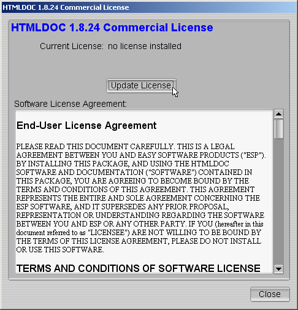
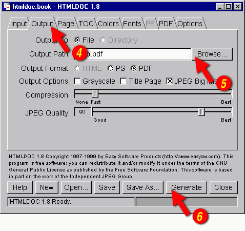
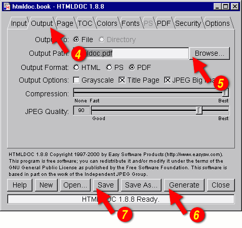
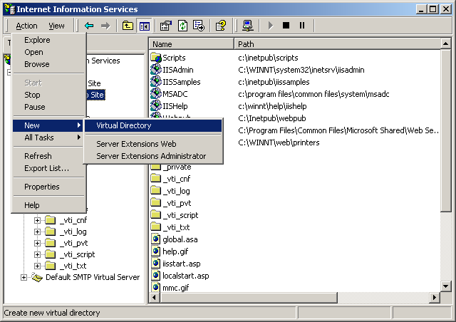
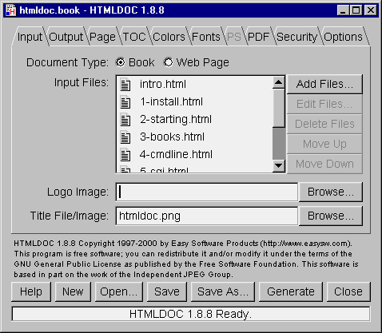
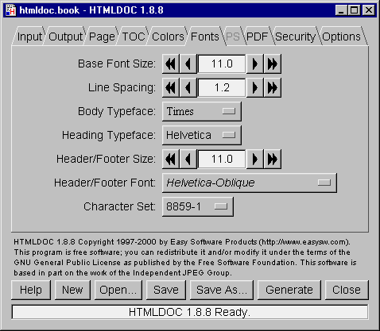
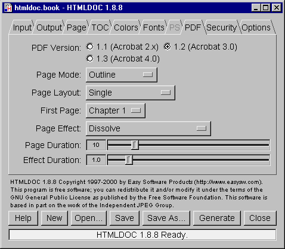
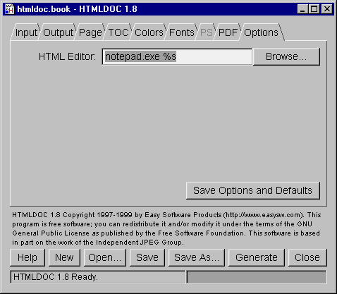
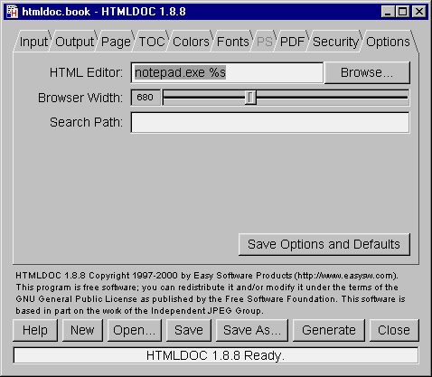

HTMLDOC 1.9 Software Users Manual
ESP-003-20041023
Easy Software Products
Copyright 1997-2004, All Rights Reserved.
Introduction
Chapter 1 -
Installing HTMLDOC
Chapter 2 - Getting
Started
Chapter 3 - Generating
Books
Chapter 4 - HTMLDOC
from the Command-Line
Chapter 5 - Using
HTMLDOC on a Web Server
Chapter 6 - HTML
Reference
Chapter 7 - GUI
Reference
Chapter 8 -
Command-Line Reference
Appendix A - License
Agreement
Appendix B - Book
File Format
Appendix C -
Release Notes
Appendix D -
Compiling HTMLDOC from Source
This document describes how to use the HTMLDOC software, version 1.9.
HTMLDOC converts Hyper-Text Markup Language ("HTML") input files into
indexed HTML, Adobe® PostScript®, or Adobe Portable Document Format
("PDF") files.
HTMLDOC supports most HTML 3.2 elements, some HTML 4.0 elements, and
can generate title and table of contents pages. It does not currently
support stylesheets.
HTMLDOC can be used as a standalone application, in a batch document
processing environment, or as a web-based report generation
application.
No restrictions are placed upon the output produced by HTMLDOC.
HTMLDOC is available both as open source software under the terms of
the GNU General Public License and as commercial software under the
terms of a traditional commercial End-User License Agreement.
Like many programs HTMLDOC was developed in response to a need our
company had for generating high-quality documentation in printed and
electronic forms. For a while we used FrameMaker® and a package from
sgi that generated "compiled" Standard Generalized Markup
Language ("SGML") files that could be used by the Electronic Book
Technologies ("EBT") documentation products; EBT was bought by INSO who
was bought by StellentTM who apparently has dropped the
whole product line. When sgi stopped supporting these
tools we turned to INSO, but the cost of their tools is prohibitive to
small businesses.
In the end we decided to write our own program to generate our
documentation. HTML seemed to be the source format of choice since
WYSIWYG HTML editors are widely (and freely) available and at worst you
can use a plain text editor. We needed HTML output for documentation on
our web server, PDF for customers to read and/or print from their
computers, and PostScript for our own printing needs.
The result of our efforts is the HTMLDOC software which is available
for Linux®/UNIX®, MacOS® X, and Microsoft® Windows®. Among other
things, this software users manual is produced using HTMLDOC.
This manual is organized into tutorial and reference chapters and
appendices:
Commercial support is available from Easy Software Products when you
purchase the HTMLDOC Professional Membership. More information is
available at the HTMLDOC web page at the following URL:
http://www.easysw.com/htmldoc/
HTMLDOC includes code to encrypt PDF document files using the RC4
algorithm with up to a 128-bit key. While this software and code may be
freely used and exported under current US laws, other countries may
restrict your use and possession of this code and software.
The Adobe Portable Document Format is Copyright 1985-2004 by Adobe
Systems Incorporated. Adobe, FrameMaker, and PostScript are registered
trademarks of Adobe Systems, Incorporated.
The Graphics Interchange Format is the copyright and GIFSM
is the service mark property of CompuServe Incorporated.
Intel is a registered trademark of Intel Corporation.
IRIX and sgi are registered trademarks of Silicon
Graphics, Inc.
Linux is a registered trademark of Linus Torvalds.
MacOS is a registered trademark of Apple Computer, Inc.
Microsoft and Windows are registered trademarks of Microsoft
Corporation.
Red Hat and RPM are registered trademarks of Red Hat, Inc.
Solaris is a registered trademark of Sun Microsystems, Inc.
SPARC is a registered trademark of SPARC International, Inc.
UNIX is a registered trademark of the X/Open Company, Ltd.
HTMLDOC is the trademark property of Easy Software Products.
HTMLDOC is copyright 1997-2004 by Easy Software Products. See
Appendix A - License Agreement for the terms of use.
This software is based in part on the work of the Independent JPEG
Group and FLTK project.
This chapter describes the steps needed to install the commercial
version of HTMLDOC on your system. If you are installing HTMLDOC from
source code, please see Appendix D, Compiling
HTMLDOC from Source.
HTMLDOC requires approximately 4MB of disk space and one of the
following environments:
- Linux® 2.4 or higher
- MacOS® X 10.2 or higher
- Microsoft Windows® 2000 or higher
- Red Hat Linux 8 or higher
- Solaris® 7 or higher
HTMLDOC may run on other platforms, however we do not provide
packages for platforms other than those listed.
The following instructions describe how to install the HTMLDOC
software on your system.
HTMLDOC is provided as a Microsoft installer file under Windows.
Double-click on the HTMLDOC icon (Figure 1-1) in the
Explorer window to install HTMLDOC under Windows using the
Microsoft software installation wizard (Figure 1-2).

Figure 1-3: The HTMLDOC icon in the Explorer window

Figure 1-4: The Microsoft software installation wizard
Double-click on the Install icon in the Finder
window (Figure 1-3) to start the software installation wizard (Figure
1-4) and follow the installer prompts.

Figure 1-3: The Install icon in the Finder window

Figure 1-4: The software installation wizard
Double-click on the htmldoc-version-linux-intel.rpm icon
or run the following command to install HTMLDOC on Red Hat Linux:
rpm -i htmldoc-version-linux-intel.rpm ENTER
Run the following command to install HTMLDOC on Solaris SPARC:
pkgadd -d htmldoc-version-solaris-sparc.pkg ENTER
Run the following command to install HTMLDOC on Solaris Intel:
pkgadd -d htmldoc-version-solaris-intel.pkg ENTER
Run the following commands as the root user to install HTMLDOC on
UNIX/Linux:
gunzip htmldoc-version-platform.tar.gz ENTER
tar xf htmldoc-version-platform.tar ENTER
./setup ENTER
Substitute the correct version and platform strings as appropriate.
After you have run the setup program, the window shown in
Figure 1-5 will appear. Follow the installation prompts until the
software is installed.

Figure 1-5: The software installation wizard
Before you can use HTMLDOC, you must license it. When you first run
HTMLDOC, the license dialog (Figure 1-6) will appear.

Figure 1-6 - The HTMLDOC License Dialog
Click on the Update License button to show the license
manager window (Figure 1-7).

Figure 1-7 - The HTMLDOC License Dialog
Enter the license key that was emailed to you or came on the inside
of the HTMLDOC CD-ROM case and click on the OK button. Click
on the Close button to start using the software.
The following instructions describe how to remove the HTMLDOC
software from your system.
Open the Control Panel window and double-click on the Add/Remove
Software icon. When the available software list is displayed,
select HTMLDOC and click on the Remove button.
Double-click on the HTMLDOC package in the finder and follow the
installer prompts.
Run the following command to remove HTMLDOC from your Red Hat Linux
system:
% rpm -e htmldoc ENTER
Run the following command to remove HTMLDOC from Solaris:
% pkgrm htmldoc ENTER
Run the following command to remove HTMLDOC from your UNIX/Linux
system:
% /etc/software/htmldoc.remove ENTER
This chapter describes how to start HTMLDOC and convert HTML files
into PostScript and PDF files.
| Note:
HTMLDOC currently does not support HTML 4.0 features such as
stylesheets or the STYLE, TBODY, THEAD
, or TFOOT elements. For more information, please consult Chapter 6 - HTML Reference.
|
For UNIX type:
% htmldoc ENTER
For Windows click:
Start Menu->All Programs->HTMLDOC->HTMLDOC
For Linux click:
Applications Menu->Office->HTMLDOC
For MacOS X click:
Applications Folder->HTMLDOC
For Solaris click:
Applications Window->ESP->HTMLDOC
The HTMLDOC window (Figure 2-1) shows the list of input files that
will be converted. Start by clicking on the Web Page radio
button (1) to specify that you will be converting a HTML web page file.

Figure 2-1 - The HTMLDOC Window
Then choose a file for conversion by clicking on the Add
Files... button (2). When the file chooser dialog appears (Figure
2-2), double-click on the HTML file (3) you wish to convert from the
list of files. If you don't see the file you wish to add, then double
click on the folder with ../ (4) to see more file options.

Figure 2-2 - The File Chooser Dialog
You've chosen your HTML files to be converted, now you need to save
your file(s) somewhere. The output file is where you would do that.
Click on the Output tab (5) to set the output file (Figure
2-3). You can either type the name of the output file into the
Output Path field or click on the Browse... button (6)
to find an acceptable output location. Clicking on browse allows you to
put the new file in a specific folder for easy retrieval. When you
click on a folder you will notice that the filename area and text is
highlighted. Click a few times at the end of the file name path and add
a slash (/) and the name of the new file. If you don't see
the folder you want to put your document in, double click on the folder
with ../ after it.

Figure 2-3 - The Output Tab
You can generate the document by clicking on the Generate
button (7) at the bottom of the HTMLDOC window. When the conversion is
completed you can open the PDF file that is produced using Adobe
Acrobat Reader or any other PDF viewing application.
| Note:
The Open button at the bottom of the HTMLDOC GUI Open
Window will not open the generated document for viewing. You will learn
about the Open button in later chapters.
|
This chapter describes how to create a book using HTML files.
While HTMLDOC can convert web pages into PostScript and PDF files,
its real strength is generating indexed HTML, PostScript, or PDF books.
HTMLDOC uses HTML heading elements to delineate chapters and headings
in a book. The H1 element is used for chapters:
<HTML>
<HEAD>
<TITLE>The Little Computer that Could</TITLE>
</HEAD>
<BODY>
<H1>Chapter 1 - The Little Computer is Born</H1>
...
<H1>Chapter 2 - Little Computer's First Task</H1>
...
</BODY>
</HTML>
Sub-headings are marked using the H2 through H6
elements.
| Note:
When using book mode, HTMLDOC starts rendering with the first
H1 element. Any text, images, tables, and other viewable elements
that precede the first H1 element are silently ignored.
Because of this, make sure you have an H1 element in your
HTML file, otherwise HTMLDOC will not convert anything.
|
Start by clicking on the Book radio button (1) to specify
you'll be converting one or more HTML files into a book.
Your next step is to choose one or more files for conversion by
clicking on the Add Files... button (2). When the file
chooser dialog appears, pick the file(s) you wish to convert and then
click on the OK button. As discussed in Chapter 2, if you
don't see the file that you want, double click on the folder with
../ after it.
Also, having all files and images in one folder will make file
retrieval much easier.

Figure 3-1: The Input Tab
HTMLDOC can automatically create a title page for you. Fill in the
Title File/Image field (3) or click the Browse...
button (4) to locate the file you want to use. If you don't see the
file you want, double click on the folder with ../ after it.
When you click on the Page tab, it brings up the screen
below. The Header and Footer rows allow you to move the header to six
different locations: top right, top middle, top left. bottom right,
bottom middle, and bottom left. The default setting is the top middle.
Simply click on the arrow tabs to change location of the title. This is
also where you can place your logo, page numbers, chapter headings,
date, and time.

Figure 3-2: The Output Tab
The output format is set in the Output tab (4). Click on
the Output tab and then click on the HTML,
PS, or PDF radio buttons to set the output format.
Now that you've chosen an output format, type the name of the output
file into the Output Path field or click on the
Browse... button (5) to select the output file using the file
chooser.
Once you have chosen the output file you can generate it by clicking
on the Generate button (6) at the bottom of the HTMLDOC
window.
HTMLDOC can save the list of HTML files, the title file, and all
other options to a special .BOOK file so you can
regenerate your book when you make changes to your HTML files.
Click on the Save button (7) to save the current book to a
file.
This chapter describes how to use HTMLDOC from the command-line to
convert web pages and generate books.
Do the following steps to access the command-line on Windows:
- Click on Start at the bottom left corner of your screen
- Click on All Programs
- Click on Accessories
- Click on Command Prompt
After you have clicked command prompt, your screen should look
something like Figure 4-1.

Figure 4-1: Command prompt window
To see what's in this directory, type the following command:
dir ENTER
You now have a list of available files and directories that you can
use. To access a different directory simply type cd and the
name of the new directory. For example, type the following if you want
to access a directory called Steve:
cd Steve ENTER
To convert a single web page type:
htmldoc --webpage -f output.pdf filename.html ENTER
htmldoc --webpage -f output.ps filename.html ENTER
htmldoc is the name of the software.
--webpage is the document type that specifies unstructured
files with page breaks between each file.
-f output.pdf is the file name that you will save all the
documents into and also the type of file it is. In this example it is a
PDF file.
filename.html is the name of the file that you want to be
converted and the type of file it is. In this example it is a HTML
file.
Try the following exercise: You want to convert the file
myhtml.html into a PDF file. The new file will be called
mypdf.pdf. How would you do this? (Don't worry, it's answered for
you on the next line. But try first.)
To accomplish this type:
htmldoc --webpage -f mypdf.pdf myhtml.html ENTER
To convert more than one web page with page breaks between each HTML
file, type:
htmldoc --webpage -f output.pdf file1.html file2.html ENTER
htmldoc --webpage -f output.ps file1.html file2.html ENTER
All we are doing is adding another file. In this example we are
converting two files: file1.html and file2.html.
Try this example: Convert one.html and two.html
into a PDF file named 12pdf.pdf. Again, the answer is on the
next line.
Your line command should look like this:
htmldoc --webpage -f 12pdf.pdf one.html two.html ENTER
We've been using HTML files, but you can also use URLs. For example:
htmldoc --webpage -f output.pdf http://slashdot.org/ ENTER
htmldoc --webpage -f output.ps http://freshmeat.net/
http://easysw.com/ ENTER
Type one of the following commands to generate a book from one or
more HTML files:
htmldoc --book -f output.html file1.html file2.html ENTER
htmldoc --book -f output.pdf file1.html file2.html ENTER
htmldoc --book -f output.ps file1.html file2.html ENTER
htmldoc is the name of the sofware.
--book is a type of document that specifies that the input
files are structured with headings.
-f output.html is where you want the converted files to go
to. In this case, we requested the file be a HTML file. We could have
made it a PDF (-f output.pdf) or Postscript (-f ouput.ps
), too.
file1.html and file2.html are the files you want to
convert.
HTMLDOC will build a table of contents for the book using the heading
elements (H1, H2, etc.) in your HTML files.
It will also add a title page using the document TITLE
text (you're going to learn about title files shortly) and other
META information you supply in your HTML files. See
Chapter 6 - HTML Reference for more information on the META
variables that are supported.
| Note:
When using book mode, HTMLDOC starts rendering with the first
H1 element. Any text, images, tables, and other viewable elements
that precede the first H1 element are silently ignored.
Because of this, make sure you have an H1 element in your
HTML file, otherwise HTMLDOC will not convert anything!
|
The --titlefile option sets the HTML file or image to
use on the title page:
htmldoc --titlefile filename.bmp ... ENTER
htmldoc --titlefile filename.gif ... ENTER
htmldoc --titlefile filename.jpg ... ENTER
htmldoc --titlefile filename.png ... ENTER
htmldoc --titlefile filename.html ... ENTER
HTMLDOC supports BMP, GIF, JPEG, and PNG images, as well as generic
HTML text you supply for the title page(s).
htmldoc --book -f 12book.pdf 1book.html 2book.html --titlefile
bookcover.jpg ENTER
Take a look at the entire command line. Dissect the information. Can
you see what the new filename is? What are the names of the files being
converted? Do you see the titlepage file? What kind of file is your
titlefile?
Figure it out? The new file is 12book.pdf. The files
converted were 1book.html and 2book.html. A title
page was created using the JPEG image file bookcover.jpg.
Chapter 8 - Command Line Reference digs deeper
into what you can do with the the command line prompt.
This chapter describes how to interface HTMLDOC to your web server
using CGI and your own server-side scripts and programs.
HTMLDOC can be used in a variety of ways to generate formatted
reports on a web server. The most common way is to use HTMLDOC as a CGI
program with your web server to provide PDF-formatted output of a web
page. Examples are provided for Microsoft IIS and the Apache web
servers.
HTMLDOC can also be called from your own server-side scripts and
programs. Examples are provided for PHP and Java.
| WARNING:
Passing information directly from the web browser to HTMLDOC can
potentially expose your system to security risks. Always be sure to
"sanitize" any input from the web browser so that filenames, URLs, and
options passed to HTMLDOC are not acted on by the shell program or
other processes.
|
HTMLDOC 1.8.24 and higher supports operation as a CGI program. You
can copy or symlink the htmldoc (all but Windows) or
htmldoc.exe (Windows) executable to your web server's
cgi-bin directory and then use it to produce PDF versions of your
web pages.
The CGI converts a page on your local server to PDF and sends it to
the client's web browser. For example, to convert a page called
superproducts.html at the following URL:
http://servername/superproducts.html
and if you installed HTMLDOC in your server's cgi-bin
directory, you would direct your clients to the following URL:
http://servername/cgi-bin/htmldoc/superproducts.html
The boldface portion represents the location of the HTMLDOC
executable on the web server. You simply place that path before the
page you want to convert.
Form data using the GET method can be passed at the end
of the URL, for example:
http://servername/cgi-bin/htmldoc/superproducts.html?name=value
When run as a CGI program, HTMLDOC will try to read a book file to
set any preferences for the conversion to PDF. For the
superproducts.html file described previously, HTMLDOC will look
at the following URLs for a book file:
http://servername/superproducts.html.book
http://servername/.book
http://servername/cgi-bin/.book
The first book file that is found will be used.
The Apache web server is easily configured to use HTMLDOC. The
simplest way is to copy or symlink the htmldoc executable to
the configured cgi-bin directory. For example, if your
Apache installation is configured to look for CGI programs in the
/var/www/cgi-bin directory, the default for Apache on Red Hat
Linux, then the command to install HTMLDOC on your web server would be:
ln -s /usr/bin/htmldoc /var/www/cgi-bin ENTER
Apache also allows you to associate CGI programs with a specific
extension. If you add the following line to your httpd.conf
file:
AddHandler cgi-script .cgi
and enable CGI execution with the Options directive for a
directory:
Options +ExecCGI
then you can copy or symlink the htmldoc executable to an
alternate location. For example, if you have a web directory called
/var/www/htdocs/products, you can install HTMLDOC in this
directory with the following command:
ln -s /usr/bin/htmldoc /var/www/htdocs/products/htmldoc.cgi
ENTER
The IIS web server is configured to run CGI programs by either
modifying the permissions of an existing directory or by creating a new
virtual directory that allows for execution of programs.
- Click on Start
- Click on Settings
- Click on Control Panel
- Double-Click on Administrative Tools
- Double-Click on Internet Services Manager

Figure 5-1:

Figure 5-2:

Figure 5-3:

Figure 5-4:

Figure 5-5:

Figure 5-6:

Figure 5-7:

Figure 5-8:
Step-by-step for IIS setup here.
Once configured, copy the htmldoc.exe program to the web
server directory. For example, for a virtual directory called
cgi-bin, the PDF converted URL would be as follows:
http://servername/cgi-bin/htmldoc.exe/superproducts.html
The boldface portion represents the location of the HTMLDOC program
on the web server.
To make this work the CGI script or program must send the appropriate
HTTP attributes, the required empty line to signify the beginning of
the document, and then execute the HTMLDOC program to generate the
HTML, PostScript, or PDF file as needed.
Another way to generate PDF files from your reports is to use HTMLDOC
as a "portal" application. When used as a portal, HTMLDOC automatically
retrieves the named document or report from your server and passes a
PDF version to the web browser. See the next sections for more
information.
Shell scripts are probably the easiest to work with, but are normally
limited to GET type requests. Here is a script called topdf
that acts as a portal, converting the named file to PDF:
#!/bin/sh
#
# Sample "portal" script to convert the named HTML file to PDF on-the-fly.
#
# Usage: http://www.domain.com/path/topdf/path/filename.html
#
#
# The "options" variable contains any options you want to pass to HTMLDOC.
#
options='-t pdf --webpage --header ... --footer ..."
#
# Tell the browser to expect a PDF file...
#
echo "Content-Type: application/pdf"
echo ""
#
# Run HTMLDOC to generate the PDF file...
#
htmldoc $options http://${SERVER_NAME}:${SERVER_PORT}$PATH_INFO
Users of this CGI would reference the URL
"http://www.domain.com/topdf.cgi/index.html" to generate a PDF file of
the site's home page.
The options variable in the script can be set to use any
supported command-line option for HTMLDOC; for a complete list see
Chapter 8 - Command-Line Reference.
Perl scripts offer the ability to generate more complex reports, pull
data from databases, etc. The easiest way to interface Perl scripts
with HTMLDOC is to write a report to a temporary file and then execute
HTMLDOC to generate the PDF file.
Here is a simple Perl subroutine that can be used to write a PDF
report to the HTTP client:
sub topdf {
# Get the filename argument...
my $filename = shift;
# Make stdout unbuffered...
select(STDOUT); $| = 1;
# Write the content type to the client...
print "Content-Type: application/pdf\n\n";
# Run HTMLDOC to provide the PDF file to the user...
system "htmldoc -t pdf --quiet --webpage $filename";
}
PHP is quickly becoming the most popular server-side scripting
language available. PHP provides a passthru() function
that can be used to run HTMLDOC. This combined with the header()
function can be used to provide on-the-fly reports in PDF format.
Here is a simple PHP function that can be used to convert a HTML
report to PDF and send it to the HTTP client:
function topdf($filename, $options = "") {
# Write the content type to the client...
header("Content-Type: application/pdf");
flush();
# Run HTMLDOC to provide the PDF file to the user...
passthru("htmldoc -t pdf --quiet --jpeg --webpage $options '$filename'");
}
The function accepts a filename and an optional "options" string for
specifying the header, footer, fonts, etc.
To prevent malicious users from passing in unauthorized characters
into this function, the following function can be used to verify that
the URL/filename does not contain any characters that might be
interpreted by the shell:
function bad_url($url) {
// See if the URL starts with http: or https:...
if (strncmp($url, "http://", 7) != 0 &&
strncmp($url, "https://", 8) != 0) {
return 1;
}
// Check for bad characters in the URL...
$len = strlen($url);
for ($i = 0; $i < $len; $i ++) {
if (!strchr("~_*()/:%?+-&@;=,$.", $url[$i]) &&
!ctype_alnum($url[$i])) {
return 1;
}
}
return 0;
}
Another method is to use the escapeshellarg() function
provided with PHP 4.0.3 and higher to generate a quoted shell argument
for HTMLDOC.
To make a "portal" script, add the following code to complete the
example:
global $SERVER_NAME;
global $SERVER_PORT;
global $PATH_INFO;
global $QUERY_STRING;
if ($QUERY_STRING != "") {
$url = "http://${SERVER_NAME}:${SERVER_PORT}${PATH_INFO}?${QUERY_STRING}";
} else {
$url = "http://${SERVER_NAME}:${SERVER_PORT}$PATH_INFO";
}
if (bad_url($url)) {
print("<html><head><title>Bad URL</title></head>\n"
."<body><h1>Bad URL</h1>\n",
."<p>The URL <b><tt>$url</tt></b> is bad.</p>\n"
."</body></html>\n");
} else {
topdf($url);
}
C programs offer the best flexibility and easily supports on-the-fly
report generation without the need for temporary files.
Here are some simple C functions that can be used to generate a PDF
report to the HTTP client from a temporary file or pipe:
#include <stdio.h>
#include <stdlib.h>
/* topdf() - convert a HTML file to PDF */
FILE *topdf(const char *filename) /* HTML file to convert */
{
char command[1024]; /* Command to execute */
puts("Content-Type: application/pdf\n");
sprintf(command, "htmldoc -t pdf --webpage %s", filename);
return (popen(command, "w"));
}
/* topdf2() - pipe HTML output to HTMLDOC for conversion to PDF */
FILE *topdf2(void)
{
puts("Content-Type: application/pdf\n");
return (popen("htmldoc -t pdf --webpage -", "w"));
}
Java programs are a portable way to add PDF support to your web
server. Here is a class called htmldoc that acts as a
portal, converting the named file to PDF. It can also be called by your
Java servlets to process an HTML file and send the result to the client
in PDF format:
class htmldoc
{
// Convert named file to PDF on stdout...
public static int topdf(String filename)// I - Name of file to convert
{
String command; // Command string
Process process; // Process for HTMLDOC
Runtime runtime; // Local runtime object
java.io.InputStream input; // Output from HTMLDOC
byte buffer []; // Buffer for output data
int bytes; // Number of bytes
// First tell the client that we will be sending PDF...
System.out.print("Content-type: application/pdf\n\n");
// Construct the command string
command = "htmldoc --quiet --jpeg --webpage -t pdf --left 36 " +
"--header .t. --footer .1. " + filename;
// Run the process and wait for it to complete...
runtime = Runtime.getRuntime();
try
{
// Create a new HTMLDOC process...
process = runtime.exec(command);
// Get stdout from the process and a buffer for the data...
input = process.getInputStream();
buffer = new byte[8192];
// Read output from HTMLDOC until we have it all...
while ((bytes = input.read(buffer)) > 0)
System.out.write(buffer, 0, bytes);
// Return the exit status from HTMLDOC...
return (process.waitFor());
}
catch (Exception e)
{
// An error occurred - send it to stderr for the web server...
System.err.print(e.toString() + " caught while running:\n\n");
System.err.print(" " + command + "\n");
return (1);
}
}
// Main entry for htmldoc class
public static void main(String[] args)// I - Command-line args
{
String server_name, // SERVER_NAME env var
server_port, // SERVER_PORT env var
path_info, // PATH_INFO env var
query_string, // QUERY_STRING env var
filename; // File to convert
if ((server_name = System.getProperty("SERVER_NAME")) != null &&
(server_port = System.getProperty("SERVER_PORT")) != null &&
(path_info = System.getProperty("PATH_INFO")) != null)
{
// Construct a URL for the resource specified...
filename = "http://" + server_name + ":" + server_port + path_info;
if ((query_string = System.getProperty("QUERY_STRING")) != null)
{
filename = filename + "?" + query_string;
}
}
else if (args.length == 1)
{
// Pull the filename from the command-line...
filename = args[0];
}
else
{
// Error - no args or env variables!
System.err.print("Usage: htmldoc.class filename\n");
return;
}
// Convert the file to PDF and send to the web client...
topdf(filename);
}
}
This chapter defines all of the HTML elements and attributes that are
recognized and supported by HTMLDOC.
There are two types of HTML files - structured documents using
headings (H1, H2, etc.) which HTMLDOC calls "books", and unstructured
documents that do not use headings which HTMLDOC calls "web pages".
A very common mistake is to try converting a web page using:
htmldoc -f filename.pdf filename.html
which will likely produce a PDF file with no pages. To convert web
page files you must use the --webpage option at the
command-line or choose Web Page in the input tab of the GUI.
HTMLDOC does not support HTML 4.0 elements, attributes,
stylesheets, or scripting.
The following HTML elements are recognized by HTMLDOC:
| Element | Version | Supported? | Notes |
|---|
| !DOCTYPE | 3.0 | Yes |
DTD is ignored |
| A | 1.0 | Yes | See Below |
| ACRONYM | 2.0 | Yes |
No font change |
| ADDRESS | 2.0 | Yes |
|
| AREA | 2.0 | No |
|
| B | 1.0 | Yes |
|
| BASE | 2.0 | No |
|
| BASEFONT | 1.0 | No |
|
| BIG | 2.0 | Yes |
|
| BLINK | 2.0 | No |
|
| BLOCKQUOTE | 2.0 | Yes |
|
| BODY | 1.0 | Yes |
|
| BR | 2.0 | Yes |
|
| CAPTION | 2.0 | Yes |
|
| CENTER | 2.0 | Yes |
|
| CITE | 2.0 | Yes |
Italic/Oblique |
| CODE | 2.0 | Yes |
Courier |
| DD | 2.0 | Yes |
|
| DEL | 2.0 | Yes |
Strikethrough |
| DFN | 2.0 | Yes |
Helvetica |
| DIR | 2.0 | Yes |
|
| DIV | 3.2 | Yes |
|
| DL | 2.0 | Yes |
|
| DT | 2.0 | Yes |
Italic/Oblique |
| EM | 2.0 | Yes |
Italic/Oblique |
| EMBED | 2.0 | Yes |
HTML Only |
| FONT | 2.0 | Yes |
See Below |
| Element | Version | Supported? | Notes |
|---|
| FORM | 2.0 | No |
|
| FRAME | 3.2 | No |
|
| FRAMESET | 3.2 | No |
|
| H1 | 1.0 | Yes |
Boldface, See Below |
| H2 | 1.0 | Yes |
Boldface, See Below |
| H3 | 1.0 | Yes |
Boldface, See Below |
| H4 | 1.0 | Yes |
Boldface, See Below |
| H5 | 1.0 | Yes |
Boldface, See Below |
| H6 | 1.0 | Yes |
Boldface, See Below |
| HEAD | 1.0 | Yes |
|
| HR | 1.0 | Yes |
See Below |
| HTML | 1.0 | Yes |
|
| I | 1.0 | Yes |
|
| IMG | 1.0 | Yes |
See Below |
| INPUT | 2.0 | No |
|
| INS | 2.0 | Yes |
Underline |
| ISINDEX | 2.0 | No |
|
| KBD | 2.0 | Yes |
Courier Bold |
| LI | 2.0 | Yes |
|
| LINK | 2.0 | No |
|
| MAP | 2.0 | No |
|
| MENU | 2.0 | Yes |
|
| META | 2.0 | Yes |
See Below |
| MULTICOL | N3.0 | No |
|
| NOBR | 1.0 | No |
|
| NOFRAMES | 3.2 | No |
|
| OL | 2.0 | Yes |
|
| OPTION | 2.0 | No |
|
| P | 1.0 | Yes |
|
| PRE | 1.0 | Yes |
|
| Element | Version | Supported? | Notes |
|---|
| S | 2.0 | Yes |
Strikethrough |
| SAMP | 2.0 | Yes |
Courier |
| SCRIPT | 2.0 | No |
|
| SELECT | 2.0 | No |
|
| SMALL | 2.0 | Yes |
|
| SPACER | N3.0 | Yes |
|
| STRIKE | 2.0 | Yes |
|
| STRONG | 2.0 | Yes |
Boldface Italic/Oblique |
| SUB | 2.0 | Yes |
Reduced Fontsize |
| SUP | 2.0 | Yes |
Reduced Fontsize |
| TABLE | 2.0 | Yes |
See Below |
| TD | 2.0 | Yes |
|
| TEXTAREA | 2.0 | No |
|
| TH | 2.0 | Yes |
Boldface Center |
| TITLE | 2.0 | Yes |
|
| TR | 2.0 | Yes |
|
| TT | 2.0 | Yes |
Courier |
| U | 1.0 | Yes |
|
| UL | 2.0 | Yes |
|
| VAR | 2.0 | Yes |
Helvetica Oblique |
| WBR | 1.0 | No |
|
HTMLDOC supports many special HTML comments to initiate page breaks,
set the header and footer text, and control the current media options:
<!-- FOOTER LEFT "foo" -->- Sets the left footer text; the test is applied to the current page
if empty, or the next page otherwise.
<!-- FOOTER CENTER "foo" -->- Sets the center footer text; the test is applied to the current page
if empty, or the next page otherwise.
<!-- FOOTER RIGHT "foo" -->- Sets the right footer text; the test is applied to the current page
if empty, or the next page otherwise.
<!-- HALF PAGE -->- Break to the next half page.
<!-- HEADER LEFT "foo" -->- Sets the left header text; the test is applied to the current page
if empty, or the next page otherwise.
<!-- HEADER CENTER "foo" -->- Sets the center header text; the test is applied to the current page
if empty, or the next page otherwise.
<!-- HEADER RIGHT "foo" -->- Sets the right header text; the test is applied to the current page
if empty, or the next page otherwise.
<!-- MEDIA BOTTOM nnn -->- Sets the bottom margin of the page. The "nnn" string can be any
standard measurement value, e.g. 0.5in, 36, 12mm, etc. Breaks to a new
page if the current page is already marked.
<!-- MEDIA COLOR "foo" -->- Sets the media color attribute for the page. The "foo" string is any
color name that is supported by the printer, e.g. "Blue", "White", etc.
Breaks to a new page or sheet if the current page is already marked.
<!-- MEDIA DUPLEX NO -->- Chooses single-sided printing for the page; breaks to a new page or
sheet if the current page is already marked.
<!-- MEDIA DUPLEX YES -->- Chooses double-sided printing for the page; breaks to a new sheet if
the current page is already marked.
<!-- MEDIA LANDSCAPE NO -->- Chooses portrait orientation for the page; breaks to a new page if
the current page is already marked.
<!-- MEDIA LANDSCAPE YES -->- Chooses landscape orientation for the page; breaks to a new page if
the current page is already marked.
<!-- MEDIA LEFT nnn -->- Sets the left margin of the page. The "nnn" string can be any
standard measurement value, e.g. 0.5in, 36, 12mm, etc. Breaks to a new
page if the current page is already marked.
<!-- MEDIA POSITION nnn -->- Sets the media position attribute (input tray) for the page. The
"nnn" string is an integer that usually specifies the tray number.
Breaks to a new page or sheet if the current page is already marked.
<!-- MEDIA RIGHT nnn -->- Sets the right margin of the page. The "nnn" string can be any
standard measurement value, e.g. 0.5in, 36, 12mm, etc. Breaks to a new
page if the current page is already marked.
<!-- MEDIA SIZE foo -->- Sets the media size to the specified size. The "foo" string can be
"Letter", "Legal", "Universal", or "A4" for standard sizes or
"WIDTHxHEIGHTunits" for custom sizes, e.g. "8.5x11in"; breaks to a new
page or sheet if the current page is already marked.
<!-- MEDIA TOP nnn -->- Sets the top margin of the page. The "nnn" string can be any
standard measurement value, e.g. 0.5in, 36, 12mm, etc. Breaks to a new
page if the current page is already marked.
<!-- MEDIA TYPE "foo" -->- Sets the media type attribute for the page. The "foo" string is any
type name that is supported by the printer, e.g. "Plain", "Glossy",
etc. Breaks to a new page or sheet if the current page is already
marked.
<!-- NEED length -->- Break if there is less than
length units left on the
current page. The length value defaults to lines of text
but can be suffixed by in, mm, or cm
to convert from the corresponding units.
<!-- NEW PAGE -->- Break to the next page.
<!-- NEW SHEET -->- Break to the next sheet.
<!-- NUMBER-UP nn -->- Sets the number of pages that are placed on each output page. Valid
values are 1, 2, 4, 6, 9, and 16.
<!-- PAGE BREAK -->- Break to the next page.
The HEADER and FOOTER comments allow you to
set an arbitrary string of text for the left, center, and right headers
and footers. Each string consists of plain text; special values or
strings can be inserted using the dollar sign ($):
$$- Inserts a single dollar sign in the header.
$CHAPTER- Inserts the current chapter heading.
$CHAPTERPAGE$CHAPTERPAGE(format)- Inserts the current page number within a chapter or file. When a
format is specified, uses that numeric format (1 = decimal, i =
lowercase roman numerals, I = uppercase roman numerals, a = lowercase
ascii, A = uppercase ascii) for the page numbers.
$CHAPTERPAGES$CHAPTERPAGES(format)- Inserts the total page count within a chapter or file. When a format
is specified, uses that numeric format (1 = decimal, i = lowercase
roman numerals, I = uppercase roman numerals, a = lowercase ascii, A =
uppercase ascii) for the page count.
$DATE- Inserts the current date.
$HEADING- Inserts the current heading.
$LOGOIMAGE- Inserts the logo image; all other text in the string will be
ignored.
$PAGE$PAGE(format)- Inserts the current page number. When a format is specified, uses
that numeric format (1 = decimal, i = lowercase roman numerals, I =
uppercase roman numerals, a = lowercase ascii, A = uppercase ascii) for
the page numbers.
$PAGES$PAGES(format)- Inserts the total page count. When a format is specified, uses that
numeric format (1 = decimal, i = lowercase roman numerals, I =
uppercase roman numerals, a = lowercase ascii, A = uppercase ascii) for
the page count.
$TIME- Inserts the current time.
$TITLE- Inserts the document title.
Limited typeface specification is currently supported to ensure
portability across platforms and for older PostScript printers:
| Requested Font | Actual Font |
|---|
| Arial | Helvetica |
| Courier | Courier |
| Helvetica | Helvetica |
| Monospace | Courier |
| Sans-Serif | Helvetica |
| Serif | Times |
| Symbol | Symbol |
| Times | Times |
All other unrecognized typefaces are silently ignored.
Currently HTMLDOC supports a maximum of 1000 chapters (H1 headings).
This limit can be increased by changing the MAX_CHAPTERS
constant in the config.h file included with the source code.
All chapters start with a top-level heading (H1) markup. Any headings
within a chapter must be of a lower level (H2 to H15). Each chapter
starts a new page or the next odd-numbered page if duplexing is
selected.
| Note:
Heading levels 7 to 15 are not standard HTML and will not likely be
recognized by most web browsers.
|
The headings you use within a chapter must start at level 2 (H2). If
you skip levels the heading will be shown under the last level that was
known. For example, if you use the following hierarchy of headings:
<H1>Chapter Heading</H1>
...
<H2>Section Heading 1</H2>
...
<H2>Section Heading 2</H2>
...
<H3>Sub-Section Heading 1</H3>
...
<H4>Sub-Sub-Section Heading 1</H4>
...
<H4>Sub-Sub-Section Heading 2</H4>
...
<H3>Sub-Section Heading 2</H3>
...
<H2>Section Heading 3</H2>
...
<H4>Sub-Sub-Section Heading 3</H4>
...
the table-of-contents that is generated will show:
Chapter Heading
- Section Heading 1
- Section Heading 2
- Sub-Section Heading 1
- Sub-Sub-Section Heading 1
- Sub-Sub-Section Heading 2
- Sub-Section Heading 2
- Sub-Sub-Section Heading 3
- Section Heading 3
When the numbered headings option is enabled, HTMLDOC recognizes the
following additional attributes for all heading elements:
VALUE="#"- Specifies the starting value for this heading level (default is "1"
for all new levels).
TYPE="1"- Specifies that decimal numbers should be generated for this heading
level.
TYPE="a"- Specifies that lowercase letters should be generated for this
heading level.
TYPE="A"- Specifies that uppercase letters should be generated for this
heading level.
TYPE="i"- Specifies that lowercase roman numerals should be generated for this
heading level.
TYPE="I"- Specifies that uppercase roman numerals should be generated for this
heading level.
HTMLDOC supports loading of BMP, GIF, JPEG, and PNG image files. EPS
and other types of image files are not supported at this time.
External URL and internal (#target and
filename.html) links are fully supported for HTML and PDF output.
When generating PDF files, local PDF file links will be converted to
external file links for the PDF viewer instead of URL links. That is,
you can directly link to another local PDF file from your HTML document
with:
<A HREF="filename.pdf">...</A>
HTMLDOC supports the following META attributes for the
title page and document information:
<META NAME="AUTHOR" CONTENT="..."- Specifies the document author.
<META NAME="COPYRIGHT" CONTENT="..."- Specifies the document copyright.
<META NAME="DOCNUMBER" CONTENT="..."- Specifies the document number.
<META NAME="GENERATOR" CONTENT="..."- Specifies the application that generated the HTML file.
<META NAME="KEYWORDS" CONTENT="..."- Specifies document search keywords.
<META NAME="SUBJECT" CONTENT="..."- Specifies document subject.
HTMLDOC supports four new
page comments to
specify page breaks. In addition, the older
BREAK
attribute is still supported by the
HR element:
<HR BREAK>
Support for the
BREAK attribute is deprecated and will be
removed in a future release of HTMLDOC.
Currently HTMLDOC supports a maximum of 200 columns within a single
table. This limit can be increased by changing the
MAX_COLUMNS
constant in the
config.h file included with the source code.
HTMLDOC does not support HTML 4.0 table elements or attributes,
such as TBODY, THEAD, TFOOT, or
RULES.
This chapter describes all of the GUI controls in HTMLDOC.
The HTMLDOC GUI (Figures 7-1 through 7-11) is contained in a single
window showing the input, output, and generation options. At the bottom
are buttons to load, save, and generate documents.
HTMLDOC stores the HTML files, settings, and options in
.BOOK
files. The buttons on the bottom of the HTMLDOC window allow you to
manage these files and generate formatted documents.
The
New button starts a new document. A confirmation dialog
will appear if you have not saved the changes to the existing document.
The
Open... button retrieves a document that you have saved
previously. A
file chooser dialog is
displayed that allows you to pick an existing book file.
The
Save button saves the current document. A
file chooser dialog is displayed if there is no filename assigned to
the current document.
Note: Saving a document is not the same as generating a
document. The book files saved to disk by the Save and
Save As... buttons are not the final HTML, PDF,
or PostScript output files. You generate those files by clicking on the
Generate button.
The
Save As... button saves the current document to a new
file. A
file chooser dialog is displayed to
allow you to specify the new document filename.
Note: Saving a document is not the same as generating a
document. The book files saved to disk by the Save and
Save As... buttons are not the final HTML, PDF,
or PostScript output files. You generate those files by clicking on the
Generate button.
The
Generate button generates the current document, creating
the specified HTML, PDF, or PostScript file(s) as needed. The progress
meter at the bottom of the window will show the progress as each page
or file is formatted and written.
Note: Generating a document is not the same as saving
a document. To save the current HTML files and settings in the HTMLDOC
GUI, click on the Save or Save As... buttons
instead.
The
Close button closes the HTMLDOC window.

Figure 7-1 - The Input Tab
The input tab (Figure 7-1) lists all of the HTML source files that are
used to generate the document. You also specify the type of document
(book or web page) and the title and logo images in this tab.
The
Book radio button specifies that the input files are
structured with headings. The
Continuous radio button
specifies unstructured files without page breaks between each file. The
Web Page radio button specifies unstructured files with page
breaks between each file.
The
Input Files list shows all of the HTML input files that
will be used to produce the document. Double-click on files to edit
them.
The
Add Files... button displays the
file chooser dialog, allowing you to select one or more HTML files
to include in the document.
The
Edit Files... button starts the specified editor program
to edit the files selected in the
Input Files list. Select
one or more files in the
Input Files list to enable the
Edit Files... button.
The
Delete Files button removes the selected files from the
Input Files list. Select one or more files in the
Input
Files list to enable the
Delete Files button.
The Delete Files button only removes the files from the
Input Files list. The files are not removed from
disk.
The
Move Up button moves the selected files in the
Input Files list up one line in the list. To enable the
Move
Up button select one or more files in the
Input Files
list.
The
Move Down button moves the selected files in the
Input Files list down one line in the list. To enable the
Move Down button select one or more files in the
Input Files
list.
The
Logo Image field contains the filename for an image to
be shown in the header or footer of pages, and in the navigation bar of
HTML files.
Click on the Browse... button to select a logo image file
using the file chooser dialog.
The
Title File/Image field contains the filename for an
image to be shown on the title page, or for a HTML file to be used for
the title page(s).
Click on the Browse... button to select a title file using
the file chooser dialog.

Figure 7-2 - The Output Tab
The output tab (Figure 7-2) specifies where your document will be
generated, the output format, and some of the generic output options.
The
File radio button selects output to a single file. The
Directory radio button selects output to multiple files in the
named directory.
Directory output is not available when generating PDF
files.
The
Output Path field contains the output directory or
filename. Click on the
Browse... button to choose an output
file using the
file chooser dialog.
The
HTML radio button selects HTML output, the
Separated HTML radio button selects HTML output that is separated
into a separate file for each heading in the table-of-contents, the
PS radio button selects PostScript output, and the
PDF
radio button selects PDF output.
The
Grayscale check box selects grayscale output for
PostScript and PDF files. The
Title Page check box specifies
that a title page should be generated for the document. The
JPEG
Big Images check box specifies that JPEG compression should be
applied to continuous-tone images.
The
Compression slider controls the amount of compression
that is used when writing PDF or Level 3 PostScript output.
Note: HTMLDOC uses Flate compression, which is not encumbered
by patents and is also used by the popular PKZIP and gzip programs.
Flate is a lossless compression algorithm (that is, you get back
exactly what you put in) that performs very well on indexed images and
text.
The
JPEG Quality slider controls the quality level used when
writing continuous-tone images with JPEG compression.

Figure 7-3 - The Page Tab
The page tab (Figure 7-3) defines the page header, footer, size, and
margins for PostScript and PDF output.
The
Page Size field contains the current page size. Click on
the arrow button to choose a standard page size.
HTMLDOC supports the following standard page size names:
- Letter - 8.5x11in (216x279mm)
- A4 - 8.27x11.69in (210x297mm)
- Universal - 8.27x11in (210x279mm)
Click in the Page Size field and enter the page width and
length separated by the letter "x" to select a custom page size. Append
the letters "in" for inches, "mm" for millimeters, or "cm" for
centimeters.
Click in the
2-Sided check box to select 2-sided (duplexed)
output.
Click in the
Landscape check box to select landscape output.
Click in the
Top,
Left,
Right, and
Bottom fields and enter the new margin values to change them.
Append the letters "in" for inches, "mm" for millimeters, or "cm" for
centimeters.
Select the desired text in each of the option buttons to customize
the header and footer for the document/body pages. The left-most option
buttons set the text that is left-justified, while the middle buttons
set the text that is centered and the right buttons set the text that
is right-justified. Each choice corresponds to the following text:
| Choice | Description |
|---|
| Blank | The field should be blank. |
| Title | The field should contain the
document title. |
| Chapter Title | The field should contain
the current chapter title. |
| Heading | The field should contain the
current heading. |
| Logo | The field should contain the logo
image. |
| 1,2,3,... | The field should contain the
current page number in decimal format (1, 2, 3, ...) |
| i,ii,iii,... | The field should contain the
current page number in lowercase roman numerals (i, ii, iii, ...) |
| I,II,III,... | The field should contain the
current page number in uppercase roman numerals (I, II, III, ...) |
| a,b,c,... | The field should contain the
current page number using lowercase letters. |
| A,B,C,... | The field should contain the
current page number using UPPERCASE letters. |
| Chapter Page | The field should contain the
current chapter page number. |
| 1/N,2/N,... | The field should contain the
current and total number of pages (n/N). |
| 1/C,2/C,... | The field should contain the
current and total number of pages in the chapter (n/N). |
| Date | The field should contain the current
date (formatted for the current locale). |
| Time | The field should contain the current
time (formatted for the current locale). |
| Date + Time | The field should contain the
current date and time (formatted for the current locale). |

Figure 7-4 - The TOC Tab
The TOC tab (Figure 7-4) defines the table-of-contents options.
Select the desired number of levels from the
Table of Contents
option button.
Click in the
Numbered Headings check box to automatically
number the headings in the document.
Select the desired text in each of the option buttons to customize the
header and footer for the tables-of-contents pages. The left-most
option buttons set the text that is left-justified, while the middle
buttons set the text that is centered and the right buttons set the
text that is right-justified.
Enter the desired title for the table-of-contents in the
Title
field.

Figure 7-5 - The Colors Tab
The colors tab (Figure 7-5) defines the color and image information
that is used for the entire document.
The
Body Color field specifies the default background color.
It can be a standard HTML color name or a hexadecimal RGB color of the
form
#RRGGBB. Click on the
Lookup... button to
pick the color graphically.
The
Body Image field specifies the default background image.
Click on the
Browse... button to pick the background image
using the
file chooser.
The
Text Color field specifies the default text color. It
can be a standard HTML color name or a hexadecimal RGB color of the
form
#RRGGBB. Click on the
Lookup... button to
pick the color graphically.
The
Link Color field specifies the default link color. It
can be a standard HTML color name or a hexadecimal RGB color of the
form
#RRGGBB. Click on the
Lookup... button to
pick the color graphically.
The
Link Style chooser specifies the default link
decoration.

Figure 7-6 - The Fonts Tab
The fonts tab (Figure 7-6) defines the fonts and character set used by
the document.
The
Base Font Size field specifies the size of normal text
in the document in points (1 point = 1/72nd inch). Click on the single
arrow buttons to decrease or increase the size by 1/10th point or on
the double arrow buttons to decrease or increase the size by whole
points.
The
Line Spacing field specifies the spacing between lines
as a multiple of the base font size. Click on the single arrow buttons
to decrease or increase the size by 10ths or on the double arrow
buttons to decrease or increase the size by whole numbers.
The
Body Typeface option button specifies the typeface to
use for normal text. Click on the option button to select a typeface.
The
Heading Typeface option button specifies the typeface to
use for headings. Click on the option button to select a typeface.
The
Header/Footer Size field specifies the size of header
and footer text in the document in points (1 point = 1/72nd inch).
Click on the single arrow buttons to decrease or increase the size by
1/10th point or on the double arrow buttons to decrease or increase the
size by whole points.
The
Header/Footer Font option button specifies the typeface
and style to use for header and footer text. Click on the option button
to select a typeface and style.
The
Character Set option button specifies the encoding of
characters in the document. Click on the option button to select a
character set.
The Embed Fonts check box controls whether or not fonts
are embedded in PostScript and PDF output.

Figure 7-7 - The PS Tab
The PS tab (Figure 7-7) contains options specific to PostScript output.
Click on one of the
Level radio buttons to select the
language level to generate. PostScript Level 1 is compatible with all
PostScript printers and will produce the largest output files.
PostScript Level 2 is compatible with most PostScript printers and
supports printer commands and JPEG image compression.
PostScript Level 3 is compatible with only the newest PostScript
printers and supports Flate image compression in addition to the Level
2 features.
The
Send Printer Commands check box controls whether or not
the output files contain PostScript
setpagedevice commands
for the page size and duplex settings. Click in the check box to enable
or disable printer commands.
Printer commands are only available with Level 2 and 3 output and may
not work with some printers.
The Include Xerox Job Comments check box controls whether
or not the output files contain Xerox job comments. Click in the check
box to enable or disable the job comments.
Job comments are available with all levels of PostScript output.

Figure 7-8 - The PDF Tab
The PDF tab (Figure 7-8) contains settings specific to PDF output.
The
PDF Version radio buttons control what version of PDF is
generated. PDF 1.3 is the most commonly supported version. Click on the
corresponding radio button to set the version.
The
Page Mode option button controls the initial viewing
mode for the document. Click on the option button to set the page mode.
The Document page mode displays only the document pages.
The Outline page mode displays the table-of-contents outline
as well as the document pages. The Full-Screen page mode
displays the document pages on the whole screen; this mode is used
primarily for presentations.
The
Page Layout option button controls the initial layout of
document pages on the screen. Click on the option button to set the
page layout.
The Single page layout displays a single page at a time.
The One Column page layout displays a single column of pages
at a time. The Two Column Left and Two Column Right
page layouts display two columns of pages at a time; the first page is
displayed in the left or right column as selected.
The
First Page option button controls the initial page that
is displayed. Click on the option button to choose the first page.
The
Page Effect option button controls the page effect that
is displayed in
Full-Screen mode. Click on the option button
to select a page effect.
The
Page Duration slider controls the number of seconds that
each page will be visible in
Full-Screen mode. Drag the
slider to adjust the number of seconds.
The
Effect Duration slider controls the number of seconds
that the page effect will last when changing pages. Drag the slider to
adjust the number of seconds.

Figure 7-9 - The Security Tab
The security tab (Figure 7-9) allows you to enable PDF document
encryption and security features.
The Encryption buttons control whether or not encryption
is performed on the PDF file. Encrypted documents can be password
protected and also provide user permissions.
The Permissions buttons control what operations are
allowed by the PDF viewer.
The Owner Password field contains the document owner
password, a string that is used by Adobe Acrobat to control who can
change document permissions, etc.
If this field is left blank, a random 32-character password is
generated so that no one can change the document using the Adobe tools.
The Include Links option controls whether or not the
internal links in a document are included in the PDF output. The
document outline (shown to the left of the document in Acrobat Reader)
is unaffected by this setting.
The User Password field contains the document user
password, a string that is used by Adobe Acrobat to restrict viewing
permissions on the file.
If this field is left blank, any user may view the document without
entering a password.

Figure 7-10 - The Options Tab
The options tab (Figure 7-10) contains the HTML file editor of your
choice and allows you to save the settings and options that will be
used in new documents.
The HTML Editor field contains the name of the HTML editor
to run when you double-click on an input file or click on the Edit
Files... button. Enter the program name in the field or click on
the Browse... button to select the editor using the
file chooser.
The %s is added automatically to the end of the command
name to insert the name of the file to be edited. If you are using
Netscape Composer to edit your HTML files you should put "-edit" before
the %s to tell Netscape to edit the file and not display
it.
The Browser Width slider specifies the width of the
browser in pixels that is used to scale images and other pixel
measurements to the printable page width. You can adjust this value to
more closely match the formatting on the screen.
The default browser width is 680 pixels which corresponds roughly to
a 96 DPI display. The browser width is only used when generating
PostScript or PDF files.
The Search Path field specifies a search path for files
that are loaded by HTMLDOC. It is usually used to get images that use
absolute server paths to load.
Directories are separated by the semicolon (;) so that drive letters
(and eventually URLs) can be specified.
The Proxy URL field specifies a URL for a HTTP proxy
server.
The Tooltips check button controls the appearance of
tooltip windows over GUI controls.
The Modern Look check button controls the appearance of
the GUI controls.
The Strict HTML check button controls strict HTML
conformance checking. When checked, HTML elements that are improperly
nested and dangling close elements will produce error messages.
The Save Options and Defaults button saves the HTML editor
and all of the document settings on the other tabs for use in new
documents. These settings are also used by the command-line version of
HTMLDOC.

Figure 7-11 - The File Chooser
The file chooser (Figure 7-11) allows you to select one or more files
and create files and directories.
The Show option button (1) selects which files are
displayed in the file list (3). Click on the option button to choose a
different type of file.
The Favorites button (2) allow you to view a specific
directory or add the current directory to your list of favorites.
The file list (3) lists the files and directories in the current
directory or folder. Double-click on a file or directory to select that
file or directory. Drag the mouse or hold the CTRL key down
while clicking to select multiple files.
The Filename field contains the currently selected
filename. Type a name in the field to select a file or directory. As
you type, any matching filenames will be highlighted; press the
TAB key to accept the matches.
The button bar along the top of the filename allows you to view each
directory in the filename. Click on any of the segments to display the
corresponding directory.
The dialog buttons (5) close the file chooser dialog window. Click on
the OK button to accept your selections or the Cancel
button to reject your selections and cancel the file operation.
This chapter describes all of the command-line options supported by
HTMLDOC.
The basic command-line usage for HTMLDOC is:
% htmldoc options filename1.html ... filenameN.html ENTER
% htmldoc options filename.book ENTER
The first form converts the named HTML files to the specified output
format immediately. The second form loads the specified
.book
file and displays the HTMLDOC window, allowing a user to make changes
and/or generate the document interactively.
If no output file or directory is specified, then all output is sent
to the standard output file.
On return, HTMLDOC returns and exit code of 0 if it was successful
and non-zero if there were errors.
The following command-line options are recognized by HTMLDOC.
The
-d option specifies an output directory for the
document files.
This option is not compatible with the PDF output format.
The
-f option specifies an output file for the document.
The -t option specifies the output format for the
document and can be one of the following:
| Format | Description |
|---|
| html | Generate one or more indexed HTML files. |
| htmlsep | Generate separate HTML files for each heading in
the table-of-contents. |
| pdf | Generate a PDF file (default version - 1.3). |
| pdf11 | Generate a PDF 1.1 file for Acrobat Reader 2.0. |
| pdf12 | Generate a PDF 1.2 file for Acrobat Reader 3.0. |
| pdf13 | Generate a PDF 1.3 file for Acrobat Reader 4.0. |
| pdf14 | Generate a PDF 1.4 file for Acrobat Reader 5.0. |
| ps | Generate one or more PostScript files (default
level). |
| ps1 | Generate one or more Level 1 PostScript files. |
| ps2 | Generate one or more Level 2 PostScript files. |
| ps3 | Generate one or more Level 3 PostScript files. |
The
-v option specifies that progress information should
be sent/displayed to the standard error file.
The
--batch option specifies a book file that you would
like to generate without the GUI popping up. This option can be
combined with other options to generate the same book in different
formats and sizes:
% htmldoc --batch filename.book -f filename.ps ENTER
% htmldoc --batch filename.book -f filename.pdf ENTER
The
--bodycolor option specifies the background color for
all pages in the document. The color can be specified by a standard
HTML color name or as a 6-digit hexadecimal number of the form
#RRGGBB.
The --bodyfont option specifies the default text font
used for text in the document body. The typeface parameter
can be one of the following:
| typeface | Actual Font |
|---|
| Arial | Helvetica |
| Courier | Courier |
| Helvetica | Helvetica |
| Monospace | Courier |
| Sans-Serif | Helvetica |
| Serif | Times |
| Symbol | Symbol |
| Times | Times |
The --bodyimage option specifies the background image
for all pages in the document. The supported formats are BMP, GIF,
JPEG, and PNG.
The --book option specifies that the input files
comprise a book with chapters and headings.
The --bottom option specifies the bottom margin. The
default units are points (1 point = 1/72nd inch); the suffixes "in",
"cm", and "mm" specify inches, centimeters, and millimeters,
respectively.
This option is only available when generating PostScript or PDF
files.
The --browserwidth option specifies the browser width in
pixels. The browser width is used to scale images and pixel
measurements when generating PostScript and PDF files. It does not
affect the font size of text.
The default browser width is 680 pixels which corresponds roughly to
a 96 DPI display. Please note that your images and table sizes are
equal to or smaller than the browser width, or your output will overlap
or truncate in places.
The --charset option specifies the 8-bit character set
encoding to use for the entire document. HTMLDOC comes with the
following character set files:
| charset | Character Set |
|---|
| cp-874 | Windows code page 874 |
| cp-1250 | Windows code page 1250 |
| cp-1251 | Windows code page 1251 |
| cp-1252 | Windows code page 1252 |
| cp-1253 | Windows code page 1253 |
| cp-1254 | Windows code page 1254 |
| cp-1255 | Windows code page 1255 |
| cp-1256 | Windows code page 1256 |
| cp-1257 | Windows code page 1257 |
| cp-1258 | Windows code page 1258 |
| iso-8859-1 | ISO-8859-1 |
| iso-8859-2 | ISO-8859-2 |
| iso-8859-3 | ISO-8859-3 |
| iso-8859-4 | ISO-8859-4 |
| iso-8859-5 | ISO-8859-5 |
| iso-8859-6 | ISO-8859-6 |
| iso-8859-7 | ISO-8859-7 |
| iso-8859-8 | ISO-8859-8 |
| iso-8859-9 | ISO-8859-9 |
| iso-8859-14 | ISO-8859-14 |
| iso-8859-15 | ISO-8859-15 |
| koi8-r | KOI8-R |
The
--color option specifies that color output is desired.
This option is only available when generating PostScript or PDF
files.
The
--compression option specifies that Flate compression
should be performed on the output file(s). The optional
level
parameter is a number from 1 (fastest and least amount of compression)
to 9 (slowest and most amount of compression).
This option is only available when generating Level 3 PostScript or
PDF files.
The
--continuous option specifies that the input files
comprise a web page (or site) and that no title page or
table-of-contents should be generated. Unlike the
--webpage
option described later in this chapter, page breaks are not inserted
between each input file.
This option is only available when generating PostScript or PDF
files.
The --cookies option specifies one or more HTTP cookies
that should be sent when converting remote URLs. Each cookie must be
separated from the others by a semicolon and a space, and values
containing whitespace or the semicolon must be placed inside
double-quotes. When specifying multiple cookies, the entire cookie
string must be surrounded by single quotes in order for the string to
be processed correctly.
The
--datadir option specifies the location of data files
used by HTMLDOC.
The
--duplex option specifies that the output should be
formatted for two sided printing.
This option is only available when generating PostScript or PDF
files. Use the --pscommands option to generate PostScript
duplex mode commands.
The
--effectduration option specifies the duration of a
page transition effect in seconds.
This option is only available when generating PDF files.
The --embedfonts option specifies that fonts should be
embedded in PostScript and PDF output. This is especially useful when
generating documents in character sets other than ISO-8859-1.
The --encryption option enables encryption and security
features for PDF output.
This option is only available when generating PDF files.
The --firstpage option specifies the first page that
will be displayed in a PDF file. The page parameter can be
one of the following:
| page | Description |
|---|
| p1 | The first page of the document. |
| toc | The first page of the table-of-contents. |
| c1 | The first page of chapter 1. |
This option is only available when generating PDF files.
The
--fontsize option specifies the base font size for the
entire document in points (1 point = 1/72nd inch).
The
--fontspacing option specifies the line spacing for
the entire document as a multiplier of the base font size. A
spacing value of 1 makes each line of text the same height as the
font.
The --footer option specifies the contents of the page
footer. The lcr parameter is a three-character string
representing the left, center, and right footer fields. Each character
can be one of the following:
| lcr | Description |
|---|
| . | A period indicates that the field
should be blank. |
| : | A colon indicates that the field should
contain the current and total number of pages in the chapter (n/N). |
| / | A slash indicates that the field should
contain the current and total number of pages (n/N). |
| 1 | The number 1 indicates that the field
should contain the current page number in decimal format (1, 2, 3, ...) |
| a | A lowercase "a" indicates that the
field should contain the current page number using lowercase letters. |
| A | An uppercase "A" indicates that the
field should contain the current page number using UPPERCASE letters. |
| c | A lowercase "c" indicates that the
field should contain the current chapter title. |
| C | An uppercase "C" indicates that the
field should contain the current chapter page number. |
| d | A lowercase "d" indicates that the
field should contain the current date. |
| D | An uppercase "D" indicates that the
field should contain the current date and time. |
| h | An "h" indicates that the field should
contain the current heading. |
| i | A lowercase "i" indicates that the
field should contain the current page number in lowercase roman
numerals (i, ii, iii, ...) |
| I | An uppercase "I" indicates that the
field should contain the current page number in uppercase roman
numerals (I, II, III, ...) |
| l | A lowercase "l" indicates that the
field should contain the logo image. |
| t | A lowercase "t" indicates that the
field should contain the document title. |
| T | An uppercase "T" indicates that the
field should contain the current time. |
Setting the footer to "..." disables the footer
entirely.
The --format option specifies the output format for the
document and can be one of the following:
| Format | Description |
|---|
| html | Generate one or more indexed HTML files. |
| htmlsep | Generate separate HTML files for each heading in
the table-of-contents. |
| pdf | Generate a PDF file (default version - 1.3). |
| pdf11 | Generate a PDF 1.1 file for Acrobat Reader 2.0. |
| pdf12 | Generate a PDF 1.2 file for Acrobat Reader 3.0. |
| pdf13 | Generate a PDF 1.3 file for Acrobat Reader 4.0. |
| pdf14 | Generate a PDF 1.4 file for Acrobat Reader 5.0. |
| ps | Generate one or more PostScript files (default
level). |
| ps1 | Generate one or more Level 1 PostScript files. |
| ps2 | Generate one or more Level 2 PostScript files. |
| ps3 | Generate one or more Level 3 PostScript files. |
The
--gray option specifies that grayscale output is
desired.
This option is only available when generating PostScript or PDF
files.
The
--header option specifies the contents of the page
header. The
lcr parameter is a three-character string
representing the left, center, and right header fields. See the
--footer option for the list of formatting characters.
Setting the header to "..." disables the header
entirely.
The
--headfootfont option specifies the font that is used
for the header and footer text. The
font parameter can be
one of the following:
- Courier
- Courier-Bold
- Courier-Oblique
- Courier-BoldOblique
- Times
- Times-Roman
- Times-Bold
- Times-Italic
- Times-BoldItalic
- Helvetica
- Helvetica-Bold
- Helvetica-Oblique
- Helvetica-BoldOblique
This option is only available when generating PostScript or PDF
files.
The
--headfootsize option sets the size of the header and
footer text in points (1 point = 1/72nd inch).
This option is only available when generating PostScript or PDF
files.
The --headingfont options sets the typeface that is used
for headings in the document. The typeface parameter can
be one of the following:
| typeface | Actual Font |
|---|
| Arial | Helvetica |
| Courier | Courier |
| Helvetica | Helvetica |
| Monospace | Courier |
| Sans-Serif | Helvetica |
| Serif | Times |
| Symbol | Symbol |
| Times | Times |
The
--help option displays all of the available options to
the standard output file.
The
--helpdir option specifies the location of the on-line
help files.
The
--jpeg option enables JPEG compression of
continuous-tone images. The optional
quality parameter
specifies the output quality from 0 (worst) to 100 (best).
This option is only available when generating Level 2 and Level 3
PostScript or PDF files.
The
--landscape option specifies that the output should be
in landscape orientation (long edge on top).
This option is only available when generating PostScript or PDF
files.
The
--left option specifies the left margin. The default
units are points (1 point = 1/72nd inch); the suffixes "in", "cm", and
"mm" specify inches, centimeters, and millimeters, respectively.
This option is only available when generating PostScript or PDF
files.
The
--linkcolor option specifies the color of links in
HTML and PDF output. The color can be specified by name or as a 6-digit
hexadecimal number of the form
#RRGGBB.
The --links option specifies that PDF output should
contain hyperlinks.
The
--linkstyle option specifies the style of links in
HTML and PDF output. The style can be "plain" for no decoration or
"underline" to underline links.
The --logoimage option specifies the logo image for the
HTML navigation bar and page headers and footers for PostScript and PDF
files. The supported formats are BMP, GIF, JPEG, and PNG.
| Note:
You need to use the --header and/or --footer
options with the l parameter or use the corresponding HTML
page comments to display the logo image in the header or footer.
The following example uses the --header option:
htmldoc --logoimage image.png --header lt. -f file.pdf file.html
|
The
--no-compression option specifies that Flate
compression should not be performed on the output files.
The
--no-duplex option specifies that the output should be
formatted for one sided printing.
This option is only available when generating PostScript or PDF
files. Use the --pscommands option to generate PostScript
duplex mode commands.
The
--no-embedfonts option specifies that fonts should not
be embedded in PostScript and PDF output.
The --no-encryption option specifies that no
encryption/security features should be enabled in PDF output.
This option is only available when generating PDF files.
The
--no-jpeg option specifies that JPEG compression
should not be performed on large images.
The --no-links option specifies that PDF output should
not contain hyperlinks.
The
--no-localfiles option disables access to local files
on the system. This option should be used when providing remote
document conversion services.
The
--no-numbered option specifies that headings should
not be numbered.
The
--no-pscommands option specifies that PostScript
device commands should not be written to the output files.
The --no-strict option turns off strict HTML conformance
checking.
The
--no-title option specifies that the title page should
not be generated.
The
--no-toc option specifies that the table-of-contents
pages should not be generated.
The
--no-xrxcomments option specifies that Xerox
PostScript job comments should not be written to the output files.
This option is only available when generating PostScript files.
The
--numbered option specifies that headings should be
numbered.
The
--nup option sets the number of pages that are placed
on each output page. Valid values for the
pages parameter
are 1, 2, 4, 6, 9, and 16.
The
--outdir option specifies an output directory for the
document files.
This option is not compatible with the PDF output format.
The
--outfile option specifies an output file for the
document.
The --owner-password option specifies the owner password
for a PDF file. If not specified or the empty string (""), a random
password is generated.
This option is only available when generating PDF files.
The
--pageduration option specifies the number of seconds
that each page will be displayed in the document.
This option is only available when generating PDF files.
The --pageeffect option specifies the page effect to use
in PDF files. The effect parameter can be one of the
following:
| effect | Description |
|---|
| none | No effect is generated. |
| bi | Box Inward |
| bo | Box Outward |
| d | Dissolve |
| gd | Glitter Down |
| gdr | Glitter Down and Right |
| gr | Glitter Right |
| hb | Horizontal Blinds |
| hsi | Horizontal Sweet Inward |
| hso | Horizontal Sweep Outward |
| vb | Vertical Blinds |
| vsi | Vertical Sweep Inward |
| vso | Vertical Sweep Outward |
| wd | Wipe Down |
| wl | Wipe Left |
| wr | Wipe Right |
| wu | Wipe Up |
This option is only available when generating PDF files.
The --pagelayout option specifies the initial page
layout in the PDF viewer. The layout parameter can be one
of the following:
| layout | Description |
|---|
| single | A single page is displayed. |
| one | A single column is displayed. |
| twoleft | Two columns are displayed with the first page on
the left. |
| tworight | Two columns are displayed with the first page
on the right. |
This option is only available when generating PDF files.
The --pagemode option specifies the initial viewing mode
in the PDF viewer. The mode parameter can be one of the
following:
| mode | Description |
|---|
| document | The document pages are displayed in a normal
window. |
| outline | The document outline and pages are displayed. |
| fullscreen | The document pages are displayed on the
entire screen in "slideshow" mode. |
This option is only available when generating PDF files.
The --path option specifies a search path for files that
are loaded by HTMLDOC. It is usually used to get images that use
absolute server paths to load.
Directories are separated by the semicolon (;) so that drive letters
and URLs can be specified. Quotes around the directory parameter are
optional. They are usually used when the directory string contains
spaces.
--path "dir1;dir2;dir3;...;dirN"
The --permissions option specifies the document
permissions. The available permission parameters are listed below:
| Permission | Description |
|---|
| all | All permissions |
| annotate | User can annotate document |
| copy | User can copy text and images from document |
| modify | User can modify document |
| print | User can print document |
| no-annotate | User cannot annotate document |
| no-copy | User cannot copy text and images from document |
| no-modify | User cannot modify document |
| no-print | User cannot print document |
| none | No permissions |
The --encryption option must be used in conjunction with
the --permissions parameter.
--permissions no-print --encryption
Multiple options can be specified with multiple --permissions
entries as needed.
--permissions no-print --permissions no-copy --encryption
This option is only available when generating PDF files.
The
--portrait option specifies that the output should be
in portrait orientation (short edge on top).
This option is only available when generating PostScript or PDF
files.
The
--pscommands option specifies that PostScript device
commands should be written to the output files.
This option is only available when generating Level 2 and Level 3
PostScript files.
The --quiet option prevents error messages from being
sent to stderr.
The
--right option specifies the right margin. The default
units are points (1 point = 1/72nd inch); the suffixes "in", "cm", and
"mm" specify inches, centimeters, and millimeters, respectively.
This option is only available when generating PostScript or PDF
files.
The --size option specifies the page size. The
size parameter can be one of the following standard sizes:
| size | Description |
|---|
| Letter | 8.5x11in (216x279mm) |
| A4 | 8.27x11.69in (210x297mm) |
| Universal | 8.27x11in (210x279mm) |
Custom sizes are specified by the page width and length separated by
the letter "x" to select a custom page size. Append the letters "in"
for inches, "mm" for millimeters, or "cm" for centimeters.
This option is only available when generating PostScript or PDF
files. Use the --pscommands option to generate PostScript
page size commands.
The --strict option turns on strict HTML conformance
checking. When enabled, HTML elements that are improperly nested and
dangling close elements will produce error messages.
The
--textcolor option specifies the default text color
for all pages in the document. The color can be specified by a standard
HTML color name or as a 6-digit hexadecimal number of the form
#RRGGBB.
The --textfont options sets the typeface that is used
for text in the document. The typeface parameter can be
one of the following:
| typeface | Actual Font |
|---|
| Arial | Helvetica |
| Courier | Courier |
| Helvetica | Helvetica |
| Monospace | Courier |
| Sans-Serif | Helvetica |
| Serif | Times |
| Symbol | Symbol |
| Times | Times |
The
--title option specifies that a title page should be
generated.
The
--titlefile option specifies a HTML file to use for
the title page.
The
--titleimage option specifies the title image for the
title page. The supported formats are BMP, GIF, JPEG, and PNG.
The
--tocfooter option specifies the contents of the
table-of-contents footer. The
lcr parameter is a
three-character string representing the left, center, and right footer
fields. See the
--footer option for
the list of formatting characters.
Setting the TOC footer to "..." disables the TOC footer
entirely.
The
--tocheader option specifies the contents of the
table-of-contents header. The
lcr parameter is a
three-character string representing the left, center, and right header
fields. See the
--footer option for
the list of formatting characters.
Setting the TOC header to "..." disables the TOC header
entirely.
The
--toclevels options specifies the number of heading
levels to include in the table-of-contents pages. The
levels
parameter is a number from 1 to 6.
The
--toctitle options specifies the string to display at
the top of the table-of-contents; the default string is "Table of
Contents".
The
--top option specifies the top margin. The default
units are points (1 point = 1/72nd inch); the suffixes "in", "cm", and
"mm" specify inches, centimeters, and millimeters, respectively.
This option is only available when generating PostScript or PDF
files.
The --user-password option specifies the user password
for a PDF file. If not specified or the empty string (""), no password
will be required to view the document.
This option is only available when generating PDF files.
The --verbose option specifies that progress information
should be sent/displayed to the standard error file.
The --version option displays the HTMLDOC version
number.
The --webpage option specifies that the input files
comprise a web page (or site) and that no title page or
table-of-contents should be generated. HTMLDOC will insert a page break
between each input file.
This option is only available when generating PostScript or PDF
files.
The
--xrxcomments option specifies that Xerox PostScript
job comments should be written to the output files.
This option is only available when generating PostScript files.
HTMLDOC sends error and status messages to stderr unless the
--quiet option is provided on the command-line. Applications can
capture these messages to relay errors or statistics to the user.
The BYTES: message specifies the number of bytes that
were written to an output file. If the output is directed at a
directory then multiple BYTES: messages will be sent.
The PAGES: message specifies the number of pages that
were written to an output file. If the output is directed at a
directory then multiple PAGES: messages will be sent. No
PAGES: messages are sent when generating HTML output.
The ERRnnn: messages specify an error condition. Error
numbers 1 to 14 map to the following errors:
- No files were found or loadable.
- No pages were generated.
- The document contains too many files or chapters.
- HTMLDOC ran out of memory.
- The specified file could not be found.
- The comment contains a bad HTMLDOC formatting command.
- The image file is not in a known format.
- HTMLDOC was unable to remove a temporary file.
- HTMLDOC had an unspecified internal error.
- HTMLDOC encountered a networking error when retrieving a file via a
URL.
- HTMLDOC was unable to read a file.
- HTMLDOC was unable to write a file.
- A HTML error was found in a source file.
- A table, image, or text fragment was too large to fit in the space
provided.
- A hyperlink in the source files was unresolved.
- A header/footer string in the document contains a bad $ command.
Error numbers 100 to 505 correspond directly to a HTTP status code.
HTMLDOC is distributed in both source code and binary (executable)
forms. The source code is provided under the terms of the GNU General
Public License ("GPL") with a license exception for the OpenSSL
toolkit. A copy of the exception and license follows this introduction.
The binaries are provided under a typical commercial software
end-user license agreement which is more restrictive than the GNU GPL.
For those not familiar with the GNU GPL, the license basically allows
you to:
- Use the HTMLDOC software and source code at no charge.
- Distribute verbatim copies of the software in source form or as
binaries you create.
- Sell verbatim copies of the software for a media fee, or sell
support for the software.
- Distribute or sell your own modified version of HTMLDOC so long as
the source code is made available under the GPL.
What this license does not allow you to do is make changes or
add features to HTMLDOC and then sell a binary distribution without
source code. You must provide source for any changes or additions to
the software, and all code must be provided under the GPL.
Easy Software Products has trademarked the HTMLDOC name. You may use
the name in any direct port or binary distribution of HTMLDOC. Please
contact Easy Software Products for written permission to use the name
in derivative products. Our intention is to protect the value of this
trademark and ensure that any derivative product meets the same
high-quality standards as the original.
Easy Software Products also sells rights to the HTMLDOC source code
under a binary distribution license for vendors that are unable to
release source code for their additions and modifications to HTMLDOC
under the GNU GPL. For information please contact us at the address
shown above.
Easy Software Products sells commercial HTMLDOC binaries and support.
You can find out more at the HTMLDOC commercial home page:
http://www.easysw.com/htmldoc/
In addition to the terms and conditions of the GNU General Public
License that follows, and as the copyright holder of HTMLDOC, Easy
Software Products grants the following special exception to the source
code license:
- OpenSSL Toolkit License Exception;
- Easy Software Products explicitly allows the compilation and
distribution of the HTMLDOC software with the OpenSSL Toolkit.
No developer is required to provide this exception in a derived work.
Version 2, June 1991
Copyright 1989, 1991 Free Software Foundation, Inc.
59 Temple Place, Suite 330, Boston, MA 02111-1307 USA
Everyone is permitted to copy and distribute verbatim
copies of this license document, but changing it is not allowed.
Preamble
The licenses for most software are designed to take away your freedom
to share and change it. By contrast, the GNU General Public License is
intended to guarantee your freedom to share and change free
software--to make sure the software is free for all its users. This
General Public License applies to most of the Free Software
Foundation's software and to any other program whose authors commit to
using it. (Some other Free Software Foundation software is covered by
the GNU Library General Public License instead.) You can apply it to
your programs, too.
When we speak of free software, we are referring to freedom, not
price. Our General Public Licenses are designed to make sure that you
have the freedom to distribute copies of free software (and charge for
this service if you wish), that you receive source code or can get it
if you want it, that you can change the software or use pieces of it in
new free programs; and that you know you can do these things.
To protect your rights, we need to make restrictions that forbid
anyone to deny you these rights or to ask you to surrender the rights.
These restrictions translate to certain responsibilities for you if you
distribute copies of the software, or if you modify it.
For example, if you distribute copies of such a program, whether
gratis or for a fee, you must give the recipients all the rights that
you have. You must make sure that they, too, receive or can get the
source code. And you must show them these terms so they know their
rights.
We protect your rights with two steps: (1) copyright the software,
and (2) offer you this license which gives you legal permission to
copy, distribute and/or modify the software.
Also, for each author's protection and ours, we want to make certain
that everyone understands that there is no warranty for this free
software. If the software is modified by someone else and passed on, we
want its recipients to know that what they have is not the original, so
that any problems introduced by others will not reflect on the original
authors' reputations.
Finally, any free program is threatened constantly by software
patents. We wish to avoid the danger that redistributors of a free
program will individually obtain patent licenses, in effect making the
program proprietary. To prevent this, we have made it clear that any
patent must be licensed for everyone's free use or not licensed at all.
The precise terms and conditions for copying, distribution and
modification follow.
GNU GENERAL PUBLIC LICENSE
TERMS AND CONDITIONS FOR COPYING, DISTRIBUTION AND MODIFICATION
- This License applies to any program or other work which contains a
notice placed by the copyright holder saying it may be distributed
under the terms of this General Public License. The "Program", below,
refers to any such program or work, and a "work based on the Program"
means either the Program or any derivative work under copyright law:
that is to say, a work containing the Program or a portion of it,
either verbatim or with modifications and/or translated into another
language. (Hereinafter, translation is included without limitation in
the term "modification".) Each licensee is addressed as "you".
Activities other than copying, distribution and modification are not
covered by this License; they are outside its scope. The act of running
the Program is not restricted, and the output from the Program is
covered only if its contents constitute a work based on the Program
(independent of having been made by running the Program). Whether that
is true depends on what the Program does.
- You may copy and distribute verbatim copies of the Program's source
code as you receive it, in any medium, provided that you conspicuously
and appropriately publish on each copy an appropriate copyright notice
and disclaimer of warranty; keep intact all the notices that refer to
this License and to the absence of any warranty; and give any other
recipients of the Program a copy of this License along with the
Program.
You may charge a fee for the physical act of transferring a copy, and
you may at your option offer warranty protection in exchange for a fee.
- You may modify your copy or copies of the Program or any portion of
it, thus forming a work based on the Program, and copy and distribute
such modifications or work under the terms of Section 1 above, provided
that you also meet all of these conditions:
- You must cause the modified files to carry prominent notices stating
that you changed the files and the date of any change.
- You must cause any work that you distribute or publish, that in
whole or in part contains or is derived from the Program or any part
thereof, to be licensed as a whole at no charge to all third parties
under the terms of this License.
- if the modified program normally reads commands interactively when
run, you must cause it, when started running for such interactive use
in the most ordinary way, to print or display an announcement including
an appropriate copyright notice and a notice that there is no warranty
(or else, saying that you provide a warranty) and that users may
redistribute the program under these conditions, and telling the user
how to view a copy of this License. (Exception: if the Program itself
is interactive but does not normally print such an announcement, your
work based on the Program is not required to print an announcement.)
These requirements apply to the modified work as a whole. If
identifiable sections of that work are not derived from the Program,
and can be reasonably considered independent and separate works in
themselves, then this License, and its terms, do not apply to those
sections when you distribute them as separate works. But when you
distribute the same sections as part of a whole which is a work based
on the Program, the distribution of the whole must be on the terms of
this License, whose permissions for other licensees extend to the
entire whole, and thus to each and every part regardless of who wrote
it.
Thus, it is not the intent of this section to claim rights or contest
your rights to work written entirely by you; rather, the intent is to
exercise the right to control the distribution of derivative or
collective works based on the Program.
In addition, mere aggregation of another work not based on the
Program with the Program (or with a work based on the Program) on a
volume of a storage or distribution medium does not bring the other
work under the scope of this License.
- You may copy and distribute the Program (or a work based on it,
under Section 2) in object code or executable form under the terms of
Sections 1 and 2 above provided that you also do one of the following:
- Accompany it with the complete corresponding machine-readable source
code, which must be distributed under the terms of Sections 1 and 2
above on a medium customarily used for software interchange; or,
- Accompany it with a written offer, valid for at least three years,
to give any third party, for a charge no more than your cost of
physically performing source distribution, a complete machine-readable
copy of the corresponding source code, to be distributed under the
terms of Sections 1 and 2 above on a medium customarily used for
software interchange; or,
- Accompany it with the information you received as to the offer to
distribute corresponding source code. (This alternative is allowed only
for noncommercial distribution and only if you received the program in
object code or executable form with such an offer, in accord with
Subsection b above.)
The source code for a work means the preferred form of the work for
making modifications to it. For an executable work, complete source
code means all the source code for all modules it contains, plus any
associated interface definition files, plus the scripts used to control
compilation and installation of the executable. However, as a special
exception, the source code distributed need not include anything that
is normally distributed (in either source or binary form) with the
major components (compiler, kernel, and so on) of the operating system
on which the executable runs, unless that component itself accompanies
the executable.
If distribution of executable or object code is made by offering
access to copy from a designated place, then offering equivalent access
to copy the source code from the same place counts as distribution of
the source code, even though third parties are not compelled to copy
the source along with the object code.
- You may not copy, modify, sublicense, or distribute the Program
except as expressly provided under this License. Any attempt otherwise
to copy, modify, sublicense or distribute the Program is void, and will
automatically terminate your rights under this License. However,
parties who have received copies, or rights, from you under this
License will not have their licenses terminated so long as such parties
remain in full compliance.
- You are not required to accept this License, since you have not
signed it. However, nothing else grants you permission to modify or
distribute the Program or its derivative works. These actions are
prohibited by law if you do not accept this License. Therefore, by
modifying or distributing the Program (or any work based on the
Program), you indicate your acceptance of this License to do so, and
all its terms and conditions for copying, distributing or modifying the
Program or works based on it.
- Each time you redistribute the Program (or any work based on the
Program), the recipient automatically receives a license from the
original licensor to copy, distribute or modify the Program subject to
these terms and conditions. You may not impose any further restrictions
on the recipients' exercise of the rights granted herein. You are not
responsible for enforcing compliance by third parties to this License.
- If, as a consequence of a court judgment or allegation of patent
infringement or for any other reason (not limited to patent issues),
conditions are imposed on you (whether by court order, agreement or
otherwise) that contradict the conditions of this License, they do not
excuse you from the conditions of this License. If you cannot
distribute so as to satisfy simultaneously your obligations under this
License and any other pertinent obligations, then as a consequence you
may not distribute the Program at all. For example, if a patent license
would not permit royalty-free redistribution of the Program by all
those who receive copies directly or indirectly through you, then the
only way you could satisfy both it and this License would be to refrain
entirely from distribution of the Program.
If any portion of this section is held invalid or unenforceable under
any particular circumstance, the balance of the section is intended to
apply and the section as a whole is intended to apply in other
circumstances.
It is not the purpose of this section to induce you to infringe any
patents or other property right claims or to contest validity of any
such claims; this section has the sole purpose of protecting the
integrity of the free software distribution system, which is
implemented by public license practices. Many people have made generous
contributions to the wide range of software distributed through that
system in reliance on consistent application of that system; it is up
to the author/donor to decide if he or she is willing to distribute
software through any other system and a licensee cannot impose that
choice.
This section is intended to make thoroughly clear what is believed to
be a consequence of the rest of this License.
- If the distribution and/or use of the Program is restricted in
certain countries either by patents or by copyrighted interfaces, the
original copyright holder who places the Program under this License may
add an explicit geographical distribution limitation excluding those
countries, so that distribution is permitted only in or among countries
not thus excluded. In such case, this License incorporates the
limitation as if written in the body of this License.
- The Free Software Foundation may publish revised and/or new versions
of the General Public License from time to time. Such new versions will
be similar in spirit to the present version, but may differ in detail
to address new problems or concerns.
Each version is given a distinguishing version number. If the Program
specifies a version number of this License which applies to it and "any
later version", you have the option of following the terms and
conditions either of that version or of any later version published by
the Free Software Foundation. If the Program does not specify a version
number of this License, you may choose any version ever published by
the Free Software Foundation.
- If you wish to incorporate parts of the Program into other free
programs whose distribution conditions are different, write to the
author to ask for permission. For software which is copyrighted by the
Free Software Foundation, write to the Free Software Foundation; we
sometimes make exceptions for this. Our decision will be guided by the
two goals of preserving the free status of all derivatives of our free
software and of promoting the sharing and reuse of software generally.
NO WARRANTY
- BECAUSE THE PROGRAM IS LICENSED FREE OF CHARGE, THERE IS NO WARRANTY
FOR THE PROGRAM, TO THE EXTENT PERMITTED BY APPLICABLE LAW. EXCEPT WHEN
OTHERWISE STATED IN WRITING THE COPYRIGHT HOLDERS AND/OR OTHER PARTIES
PROVIDE THE PROGRAM "AS IS" WITHOUT WARRANTY OF ANY KIND, EITHER
EXPRESSED OR IMPLIED, INCLUDING, BUT NOT LIMITED TO, THE IMPLIED
WARRANTIES OF MERCHANTABILITY AND FITNESS FOR A PARTICULAR PURPOSE. THE
ENTIRE RISK AS TO THE QUALITY AND PERFORMANCE OF THE PROGRAM IS WITH
YOU. SHOULD THE PROGRAM PROVE DEFECTIVE, YOU ASSUME THE COST OF ALL
NECESSARY SERVICING, REPAIR OR CORRECTION.
- IN NO EVENT UNLESS REQUIRED BY APPLICABLE LAW OR AGREED TO IN
WRITING WILL ANY COPYRIGHT HOLDER, OR ANY OTHER PARTY WHO MAY MODIFY
AND/OR REDISTRIBUTE THE PROGRAM AS PERMITTED ABOVE, BE LIABLE TO YOU
FOR DAMAGES, INCLUDING ANY GENERAL, SPECIAL, INCIDENTAL OR
CONSEQUENTIAL DAMAGES ARISING OUT OF THE USE OR INABILITY TO USE THE
PROGRAM (INCLUDING BUT NOT LIMITED TO LOSS OF DATA OR DATA BEING
RENDERED INACCURATE OR LOSSES SUSTAINED BY YOU OR THIRD PARTIES OR A
FAILURE OF THE PROGRAM TO OPERATE WITH ANY OTHER PROGRAMS), EVEN IF
SUCH HOLDER OR OTHER PARTY HAS BEEN ADVISED OF THE POSSIBILITY OF SUCH
DAMAGES.
END OF TERMS AND CONDITIONS
PLEASE READ THIS DOCUMENT CAREFULLY. THIS IS A LEGAL AGREEMENT
BETWEEN YOU AND EASY SOFTWARE PRODUCTS ("ESP"). BY INSTALLING THIS
PACKAGE, AND USING THE HTMLDOC SOFTWARE AND DOCUMENTATION ("SOFTWARE")
CONTAINED IN THIS PACKAGE, YOU ARE AGREEING TO BECOME BOUND BY THE
TERMS AND CONDITIONS OF THIS AGREEMENT. THIS AGREEMENT REPRESENTS THE
ENTIRE AND SOLE AGREEMENT CONCERNING THE ESP SOFTWARE, AND IT
SUPERSEDES ANY PRIOR PROPOSAL, REPRESENTATION OR UNDERSTANDING
REGARDING THE SOFTWARE BETWEEN YOU AND ESP OR ANY OTHER PARTY. IF YOU
(hereafter in this document referred to as "LICENSEE") ARE NOT WILLING
TO BE BOUND BY THE TERMS OF THIS LICENSE AGREEMENT, PLEASE DO NOT
INSTALL OR USE THIS SOFTWARE.
- GRANT OF LICENSE; USE RESTRICTIONS. In consideration for the
payment of a license fee, ESP grants to LICENSEE a personal,
nontransferable (except as provided below) and nonexclusive right to
use the SOFTWARE on one (1) computer system, solely for LICENSEE's
internal business purposes. LICENSEE agrees that it shall not reverse
compile or disassemble any portion of the SOFTWARE not already provided
by ESP in source code form.
- OWNERSHIP OF SOFTWARE. LICENSEE agrees that no title to the
SOFTWARE, or the intellectual property in any of the SOFTWARE, or in
any SOFTWARE copy, is transferred to LICENSEE, and that all rights not
expressly granted to LICENSEE hereunder are reserved by ESP. This
license is not a sale of the original SOFTWARE or any copy thereof.
- TRANSFER RESTRICTIONS. If LICENSEE transfers ownership, or
otherwise disposes, of a computer system for which a license for the
SOFTWARE was purchased, provided that the transferee agrees to accept
the terms and conditions of this AGREEMENT, LICENSEE may transfer the
SOFTWARE and all licenses and rights in SOFTWARE granted under this
AGREEMENT to such transferee, provided that all SOFTWARE copies are
also transferred.
- DISCLOSURE RESTRICTIONS. LICENSEE agrees to not disclose or
otherwise disseminate software licensing information, including the
so-called "license key" provided to LICENSEE by ESP, to third parties
other than ESP or its official distributors. Should LICENSEE violate
this restriction, LICENSEE shall comply with the termination clause of
this license and pay a penalty fee of $1000 US per offense or $100,000
US, whichever is greater. This restriction does not apply if the
license is being transferred according to the rules in paragraph 3.
- TERMINATION. If licensee fails to fulfill any of LICENSEE's
material obligations under this AGREEMENT, ESP may, at any time
thereafter, and in addition to any other available remedies, terminate
this AGREEMENT and all licenses and rights granted to LICENSEE under
this AGREEMENT. Upon termination of this AGREEMENT, LICENSEE shall,
within thirty (30) days after termination, deliver to ESP all removable
media and documentation containing the SOFTWARE, and shall render
unusable all copies of the SOFTWARE placed in any storage apparatus.
- GOVERNING LAW. This License is governed by the laws of the
State of Maryland, U.S.A., excluding choice of law rules. If any part
of this License is found to be in conflict with the law, that part
shall be interpreted in its broadest meaning consistent with the law,
and no other parts of the License shall be affected.
- U.S. GOVERNMENT USERS. This SOFTWARE is provided with
RESTRICTED RIGHTS. If you are a unit or agency of the United States
Government or are acquiring the Software for any such unit or agency,
the following applies:
If the unit or agency is the
Department of Defense ("DOD"), the SOFTWARE and its documentation are
classified as "commercial computer software" and "commercial computer
software documentation" respectively and, pursuant to DFAR Section
227.7202, the Government is acquiring the SOFTWARE and its
documentation in accordance with the terms of this License. If the unit
or agency is other than DOD, the SOFTWARE and its documentation are
classified as "commercial computer software" and "commercial computer
software documentation" respectively and, pursuant to FAR Section
12.212, the Government is acquiring the SOFTWARE and its documentation
in accordance with the terms of this License.
ESP warrants that it has the authority and right to license the
SOFTWARE, and that the SOFTWARE will conform to the material printed
specifications therefore which are in effect on the date of original
delivery of such SOFTWARE. ESP's warranty and obligation shall extend
for a period of ninety (90) days after the date of the original
delivery of SOFTWARE to LICENSEE by ESP, and is solely for the benefit
of LICENSEE, who has no authority to assign or pass through this
warranty to any other person or entity.
Except as provided in this Section, the SOFTWARE is provided to
LICENSEE on an "AS IS" basis, and ESP makes no other warranty of any
kind, express or implied, with regard to the SOFTWARE licensed
hereunder. ESP warrants that the SOFTWARE properly processes date and
time information between the years 1970 and 2038. ESP does not warrant
or represent that the SOFTWARE will operate uninterrupted or error free
or that all defects in the SOFTWARE are correctable or will be
corrected. This warranty shall not apply if SOFTWARE is used other than
in accordance with ESP's written instructions, or if any of LICENSEE's
hardware equipment or other software malfunctions. ESP's entire
liability and LICENSEE's exclusive remedy for any defects in the
SOFTWARE shall be to obtain ESP's SOFTWARE updates via the Internet or
pay a media update fee for each copy of the SOFTWARE.
THE FORGOING WARRANTIES ARE IN LIEU OF, AND ESP DISCLAIMS, ALL OTHER
WARRANTIES, EXPRESS OR IMPLIED, INCLUDING, WITHOUT LIMITATION, ANY
WARRANTY OF MERCHANTABILITY OR FITNESS FOR A PARTICULAR PURPOSE. Some
states do not allow the exclusion of implied warranties, so the
exclusion above may not apply to LICENSEE. This warranty gives LICENSEE
specific legal rights, and LICENSEE may have other rights which vary
from state to state.
IN NO EVENT SHALL ESP OR ESP'S LICENSORS BE LIABLE TO LICENSEE FOR
ANY SPECIAL, CONSEQUENTIAL, INCIDENTAL OR INDIRECT DAMAGES OF ANY KIND
(INCLUDING WITHOUT LIMITATION LOSS OF PROFITS OR DATA AND PERSONAL
INJURY), WHETHER OR NOT ESP HAS BEEN ADVISED OF THE POSSIBILITY OF SUCH
LOSS, HOWEVER CAUSED AND ON ANY THEORY OF LIABILITY, ARISING OUT OF
THIS AGREEMENT. THESE LIMITATIONS SHALL APPLY NOTWITHSTANDING THE
FAILURE OF THE ESSENTIAL PURPOSE OF ANY LIMITED REMEDY. In no event
will ESP be liable for any claim against LICENSEE by a third party, and
LICENSEE hereby agrees to indemnify and hold ESP harmless for any
claims for cost, damage, expense or liability arising out of or in
connection with the installation, use and performance of the SOFTWARE
licensed hereunder, whether alone or in combination with any other
product or service. Some states do not allow the limitation or
exclusion of liability for incidental or consequential damages, so the
limitation above may not apply to LICENSEE.
This appendix describes the HTMLDOC .book file format.
The HTMLDOC .book file format is a simple text format that
provides the command-line options and files that are part of the
document. These files can be used from the GUI interface or from the
command-line using the --batch option:
htmldoc filename.book
htmldoc --batch filename.book
The first form will load the book and display the GUI interface, if
configured. Windows users should use ghtmldoc.exe executable
to show the GUI and htmldoc.exe for the batch mode:
ghtmldoc.exe filename.book
htmldoc.exe --batch filename.book
Each .book file starts with a line reading:
#HTMLDOC 1.8.17
The version number (1.8.17) is optional.
Following the header is a line containing the options for the book.
You can use any valid command-line option on this line:
-f htmldoc.pdf --titleimage htmldoc.png --duplex --compression=9 --jpeg=90
Long option lines can be broken using a trailing backslash (\
) on the end of each continuation line:
-f htmldoc.pdf --titleimage htmldoc.png --duplex \
--compression=9 --jpeg=90
Following the options are a list of files or URLs to include in the
document:
intro.html
1-install.html
2-starting.html
3-books.html
4-cmdline.html
5-cgi.html
6-htmlref.html
7-guiref.html
8-cmdref.html
a-license.html
b-book.html
c-relnotes.html
The following is the complete book file needed to generate this
documentation:
#HTMLDOC 1.8.13
-f htmldoc.pdf --titleimage htmldoc.png --duplex --compression=9 --jpeg=90
intro.html
1-install.html
2-starting.html
3-books.html
4-cmdline.html
5-cgi.html
6-htmlref.html
7-guiref.html
8-cmdref.html
a-license.html
b-book.html
c-relnotes.html
Prior to HTMLDOC version 1.8.12, the book file format was slightly
different:
#HTMLDOC version
file count
file(s)
options
While HTMLDOC still supports reading this format, we do not recommend
using it for new books. In particular, when generating a document using
the --batch option, some options may not be applied
correctly since the files are loaded prior to setting the output
options in the old format.
This appendix provides the release notes for each version of HTMLDOC.
- HTMLDOC now provides much better support for "wrapping" of text
around images and new support for tables via the ALIGN attribute (STR
#16)
This chapter describes the steps needed to install HTMLDOC on your
system from the source distributions.
HTMLDOC requires ANSI C and C++ compilers - recent versions of
GCC/EGCS work fine. To build the GUI you'll also need:
Secure (https) URL support can be enabled via the
OpenSSL library. You should use at least version 0.9.6l.
HTMLDOC uses a configuration script produced by GNU autoconf to
configure itself for your system. If your ANSI C compiler is not called
cc or gcc, set the CC environment
variable to the name and path of your ANSI C compiler:
% setenv CC /path/to/compiler ENTER [C Shell]
% CC=/path/to/compiler; export CC ENTER [Bourne/Korn Shell]
Similarly, if your C++ compiler is not called CC, gcc
, c++, or g++, set the CXX
environment variable to the name and path of your C++ compiler:
% setenv CXX /path/to/compiler ENTER [C Shell]
% CXX=/path/to/compiler; export CXX ENTER [Bourne/Korn Shell]
Then run the following command to configure HTMLDOC for installation
in the default directories:
% ./configure ENTER
The default configuration will install HTMLDOC in the /usr/bin
directory with the data files under /usr/share/htmldoc and
the documentation and on-line help under /usr/share/doc/htmldoc
. Use the --prefix option to change the installation prefix
to a different directory such as /usr/local:
% ./configure --prefix=/usr/local ENTER
If the OpenSSL library is not installed in a standard location for
your compilers, use the --with-openssl-includes and
--with-openssl-libs options to point to the OpenSSL library:
% ./configure --with-openssl-libs=/path/to/openssl/lib \
--with-openssl-includes=/path/to/openssl ENTER
HTMLDOC is built from a Makefile in the distribution's main
directory. Simply run the "make" command to build HTMLDOC:
% make ENTER
If you get any fatal errors, please report them on the
htmldoc.general newsgroup at:
http://www.easysw.com/newsgroups.php
Please note the version of HTMLDOC that you are using as well as any
pertinent system information such as the operating system, OS version,
compiler, and so forth. Omitting this information may delay or prevent
a solution to your problem.
Once you have compiled the software successfully, you may install
HTMLDOC by running the following command:
% make install ENTER
If you are installing in a restricted directory like /usr
then you'll need to be logged in as root.
A Visual C++ 6.0 workspace file and associated project files are
included in the source distribution under the "visualc" directory. Open
the workspace file "htmldoc.dsw", adjust the FLTK include and project
file locations, and then build the HTMLDOC target.
| Note:
You also need to download the OpenSSL and FLTK libraries in order to
compile HTMLDOC with Visual C++.
|
To install HTMLDOC with Visual C++, create an installation directory
and copy the ghtmldoc.exe and htmldoc.exe
executables, the afm directoryj, the data
directory, and the doc directory to it.
Then use the regedit program to create the following two
string entries:
HKEY_LOCAL_MACHINE\Software\Easy Software
Products\HTMLDOC\data- C:\installation\directory
HKEY_LOCAL_MACHINE\Software\Easy Software Products\HTMLDOC\doc
- C:\installation\directory\doc